2 סדרות וגבולות
2.1 סדרות
נתחיל במספר \(3\), ובכל צעד נוסיף \(2\). כך נקבל \[3,\ 5,\ 7,\ 9,\ldots\] הכלל מאפשר להמשיך את הרשימה בלי סוף. לכל מספר ברשימה יש מקום: המספר הראשון הוא \(3\), השני הוא \(5\), וכן הלאה. רשימה אינסופית ומסודרת כזו נקראת סדרה.
הגדרה 2.1.1 — סדרה.
סדרה היא רשימה אינסופית ומסודרת של מספרים ממשיים: \[a_1,\ a_2,\ a_3,\ldots\] המספר \(a_n\) הוא האיבר שבמקום \(n\).
המספר \(n\) נקרא האינדקס: הוא מציין את מקומו של האיבר בסדרה.
את הסדרה כולה נסמן \((a_n)\). בסדרה יש חשיבות לסדר, ומותר לאותו מספר להופיע בכמה מקומות.
במונחים של פרק 1: סדרה היא פונקציה שמתאימה לכל מספר טבעי \(n\) את האיבר \(a_n\). כאן נתחיל לספור מהאינדקס \(1\), אלא אם נאמר אחרת.
דוגמה 2.1.2 — האינדקס והאיבר.
בסדרה שבפתיחה: \[\begin{aligned} a_1&=3,\\ a_2&=5,\\ a_3&=7. \end{aligned}\] בכתיב \(a_3=7\), האינדקס הוא \(3\), והאיבר השלישי הוא \(7\).
האיבר הרביעי הוא \(9\).
האינדקס של האיבר \(5\) הוא \(2\).
האיבר הרביעי הוא \(9\): כלומר \(a_4=9\).
האיבר השני הוא \(5\): כלומר \(a_2=5\).
דרכי הגדרה של סדרה
אי אפשר לרשום רשימה אינסופית במלואה. כדי להגדיר סדרה נותנים כלל שקובע את איבריה. נשתמש בשתי דרכים נפוצות.
הגדרה 2.1.3 — דרכי הגדרה: נוסחה ורקורסיה.
נוסחה לאיבר הכללי מחשבת את \(a_n\) ישירות מתוך \(n\), בלי לחשב את האיברים שלפניו.
למשל, הנוסחה \(a_n=2n+1\) מגדירה את הסדרה שבפתיחה. כדי לחשב את האיבר העשירי מציבים \(n=10\): \[a_{10}=2\cdot10+1=21.\]
חשבו את \(a_6\): בשדה הראשון כתבו את הביטוי לאחר הצבת האינדקס, ובשני את התוצאה כמספר.
\(a_6=\) \(2\cdot6+1\) \(=\) \(13\)
בהגדרה באמצעות רקורסיה נותנים איבר ראשון, או כמה איברים ראשונים, וכלל לחישוב כל איבר חדש מתוך קודמיו.
למשל, נותנים איבר ראשון: \[a_1=1,\] וכלל לחישוב האיבר הבא: \[a_{n+1}=2a_n.\] כלומר, מתחילים במספר \(1\), ובכל צעד כופלים את האיבר הקודם ב \(2\): \[\begin{aligned} a_2&=2\cdot1=2,\\ a_3&=2\cdot2=4. \end{aligned}\]
המשיכו באותו אופן: כתבו את החישוב, ואחריו את התוצאה.
\(a_4=\) \(2\cdot4\) \(=\) \(8\)
\(a_5=\) \(2\cdot8\) \(=\) \(16\)
\[\begin{aligned} a_4&=2a_3=2\cdot4=8,\\ a_5&=2a_4=2\cdot8=16. \end{aligned}\]
לאותה סדרה יכולות להיות שתי ההצגות: הסדרה הרקורסיבית בדוגמה מתוארת גם בנוסחה \(a_n=2^{n-1}\).
שימו לב — כמה איברים ראשונים לא קובעים את ההמשך.
בסדרה המתחילה באיברים \(2,4,8,\ldots\) האיבר הבא יכול להיות \(16\) אם כופלים בכל פעם ב \(2\), או \(14\) אם מוסיפים לפי הסדר \(2,4,6,8,\ldots\). שתי האפשרויות מתאימות לשלושת האיברים הנתונים. כדי לדעת איזו סדרה מתוארת, צריך כלל או מידע נוסף.
שתי דרכים לצייר סדרה
נדגים על ששת האיברים הראשונים של \(a_n=2n+1\): המספרים \(3,5,7,9,11,13,\ldots\).
במישור: מסמנים את הנקודות \((n,a_n)\). בציר האופקי מסמנים את האינדקס \(n\), ובציר האנכי את האיבר \(a_n\).
למשל, האיבר \(a_2=5\) נותן את הנקודה \((2,5)\). הקווים המקווקווים עוזרים לקרוא את השיעורים; הם אינם חלק מהגרף. לא מחברים בין הנקודות: בין האינדקסים \(1\) ו \(2\) אין אינדקס נוסף בסדרה.
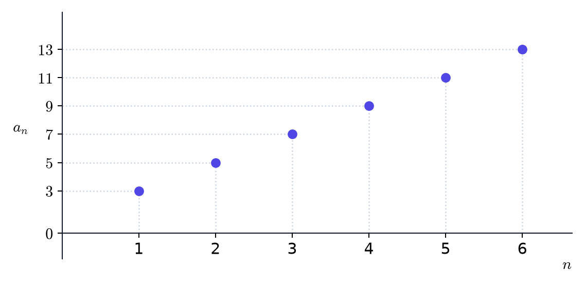
על הישר הממשי: מסמנים את איברי הסדרה \(a_n\) עצמם. למשל, את \(a_2\) מסמנים בנקודה \(5\), כי האיבר השני הוא \(5\).
התוויות מראות איזה איבר מסומן בכל נקודה; המיקום על הישר נקבע לפי האיבר, ולא לפי האינדקס.
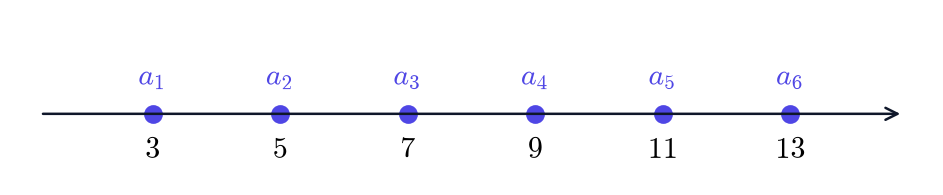
בדיקה עצמית.
אם \(a_4=-2\), היכן מסמנים אותו בכל ציור?
במישור מסמנים את הנקודה ( \(4\), \(-2\) ).
על הישר הממשי מסמנים את האיבר בנקודה \(-2\).
במישור זו הנקודה \((4,-2)\); על הישר זו הנקודה \(-2\), עם התווית \(a_4\).
דוגמה 2.1.4 — כמה סדרות מוכרות.
בכל ציור מופיעים ששת האיברים הראשונים.
(א) סדרה קבועה: כל האיברים שווים לאותו מספר, \(a_n=c\). למשל, עבור \(c=2\) מתקבלת \(2,2,2,\ldots\).
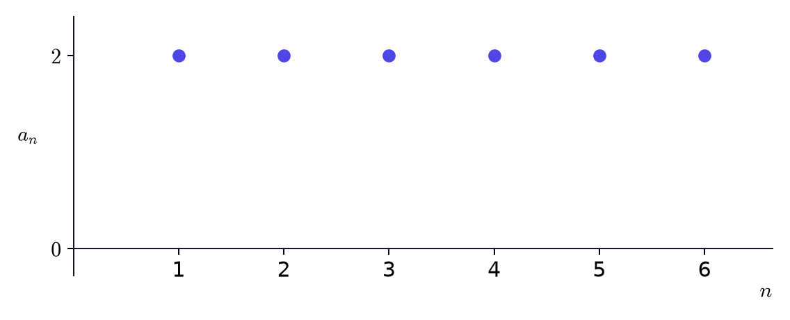
(ב) הסדרה ההרמונית: \(a_n=\frac1n\), כלומר \(1,\frac12,\frac13,\ldots\).
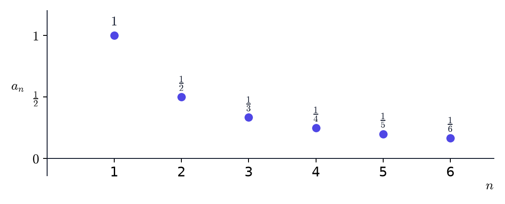
(ג) סדרה מתחלפת: איבר חיובי ואיבר שלילי מופיעים לסירוגין. למשל, \(a_n=(-1)^n\) נותנת \(-1,1,-1,1,\ldots\).
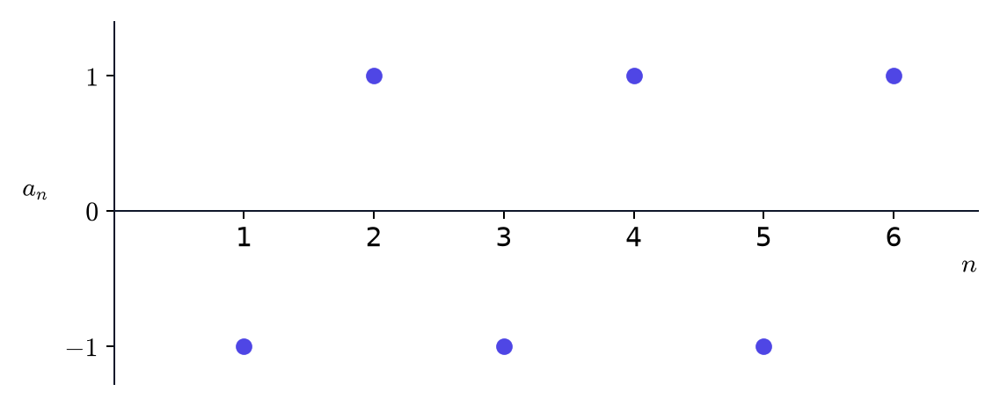
על הישר הממשי, איברים בעלי אותו ערך נופלים על אותה נקודה: \(a_1,a_3,a_5\) נמצאים כולם ב \(-1\), ו \(a_2,a_4,a_6\) ב \(1\).
(ד) סדרה חשבונית: בכל צעד מוסיפים הפרש קבוע \(d\): \[a_{n+1}=a_n+d.\] הנוסחה לאיבר הכללי היא \[a_n=a_1+(n-1)d.\] יש \(n-1\) צעדים מהאיבר הראשון לאיבר שבמקום \(n\).
למשל, \(a_1=1\) ו \(d=2\) נותנים \(1,3,5,7,\ldots\).
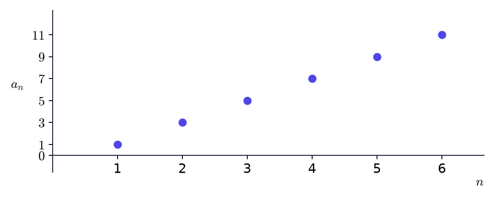
(ה) סדרה הנדסית: בכל צעד כופלים ב-מנה קבועה \(q\): \[a_{n+1}=qa_n.\] כאשר \(q\ne0\), הנוסחה לאיבר הכללי היא \[a_n=a_1q^{n-1}.\] הכפל החוזר מסביר את החזקה \(n-1\) בנוסחה.
למשל, \(a_1=1\) ו \(q=2\) נותנים \(1,2,4,8,\ldots\).
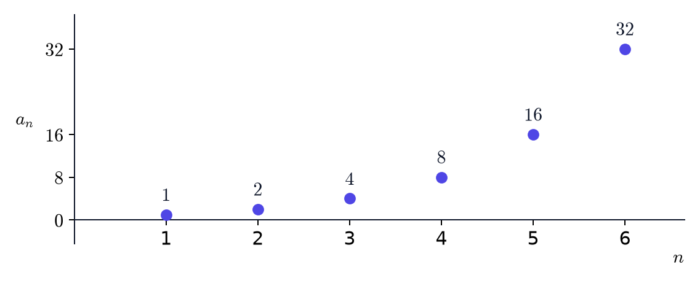
(ו) סדרת פיבונאצ’י: מתחילים ב \(a_1=a_2=1\), וכל איבר חדש הוא סכום שני קודמיו: \[a_{n+2}=a_{n+1}+a_n.\] כך מתקבלת הסדרה \(1,1,2,3,5,8,13,\ldots\).
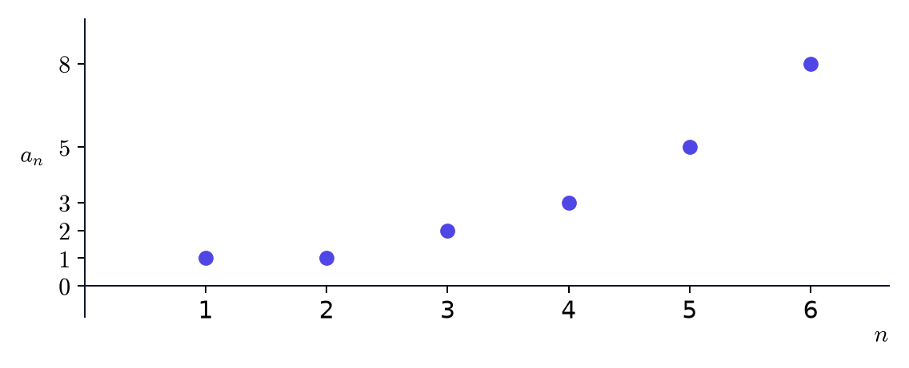
דוגמה 2.1.5 — מחשבים איברים.
(א) נתונה הסדרה \(a_n=\frac{n+1}{n}\). חשבו את האיברים המבוקשים.
בכל שורה כתבו תחילה את הביטוי לאחר הצבת האינדקס, ואחריו את התוצאה.
| האיבר | הצבה בנוסחה | תוצאה |
|---|---|---|
| \(a_1\) | \(\frac{1+1}{1}\) | \(2\) |
| \(a_2\) | \(\frac{2+1}{2}\) | \(\frac{3}{2}\) |
| \(a_{10}\) | \(\frac{10+1}{10}\) | \(\frac{11}{10}\) |
מציבים בכל פעם את האינדקס במקום \(n\): \[\begin{aligned} a_1&=\frac{1+1}{1}=2,\\[4pt] a_2&=\frac{2+1}{2}=\frac{3}{2},\\[4pt] a_{10}&=\frac{10+1}{10}=\frac{11}{10}. \end{aligned}\]
(ב) השלימו את שמונת האיברים הראשונים של סדרת פיבונאצ’י.
\(a_1=\) \(1\)
\(a_2=\) \(1\)
| האיבר | חישוב | תוצאה |
|---|---|---|
| \(a_3\) | \(1+1\) | \(2\) |
| \(a_4\) | \(1+2\) | \(3\) |
| \(a_5\) | \(2+3\) | \(5\) |
| \(a_6\) | \(3+5\) | \(8\) |
| \(a_7\) | \(5+8\) | \(13\) |
| \(a_8\) | \(8+13\) | \(21\) |
שני האיברים הראשונים הם \(1\). אחר כך מחברים בכל פעם את שני האיברים הקודמים.
\(1,1,2,3,5,8,13,21,\ldots\).
למשל, \(a_7=a_5+a_6=5+8=13\).
(ג) סדרה חשבונית מתחילה באיברים \(4,7,10,13,\ldots\).
מצאו את האיבר הראשון ואת ההפרש, וכתבו נוסחה לאיבר הכללי.
\(a_1=\) \(4\)
\(d=\) \(3\)
\(a_n=\) \(3n+1\)
כעת הציבו \(n=20\) בנוסחה וחשבו:
| האיבר | הצבה בנוסחה | תוצאה |
|---|---|---|
| \(a_{20}\) | \(3\cdot20+1\) | \(61\) |
בנוסחה \(a_n=a_1+(n-1)d\), הציבו את האיבר הראשון ואת ההפרש.
\[\begin{aligned} a_n&=4+3(n-1)=3n+1,\\ a_{20}&=3\cdot20+1=61. \end{aligned}\]
(ד) סדרה הנדסית מתחילה באיברים \(3,6,12,24,\ldots\).
מצאו את האיבר הראשון ואת המנה, וכתבו נוסחה לאיבר הכללי.
\(a_1=\) \(3\)
\(q=\) \(2\)
\(a_n=\) \(3\cdot2^{n-1}\)
כעת הציבו \(n=6\) בנוסחה וחשבו:
| האיבר | הצבה בנוסחה | תוצאה |
|---|---|---|
| \(a_6\) | \(3\cdot2^{6-1}\) | \(96\) |
בנוסחה \(a_n=a_1q^{n-1}\), הציבו את האיבר הראשון ואת המנה.
\[\begin{aligned} a_n&=3\cdot2^{n-1},\\ a_6&=3\cdot2^{6-1}=96. \end{aligned}\]
בדיקה עצמית.
(א) האם הרשימה האינסופית שבה כל האיברים שווים ל \(1\) היא סדרה?
איברים באינדקסים שונים יכולים להיות שווים. כתבו נוסחה לאיבר הכללי:
\(a_n=\) \(1\)
(ב) חשבו את האיבר החמישי של \(a_n=(-1)^n n\) בשני שלבים.
בשדה הראשון הציבו \(n=5\), ובשני כתבו את התוצאה כמספר:
\(a_5=\) \((-1)^5\cdot5\) \(=\) \(-5\)
\((-1)^5=-1\), ולכן \((-1)^5\cdot5=-5\).
תרגילים
שאלה 2.1.6 — איברים מנוסחה.
חשבו את האיברים המבוקשים. כתבו את ההצבה בנוסחה ואת התוצאה.
(א) \(a_n=n^2-n\)
| האיבר | הצבה בנוסחה | תוצאה |
|---|---|---|
| \(a_3\) | \(3^2-3\) | \(6\) |
(ב) \(a_n=\frac{(-1)^n}{n}\)
| האיבר | הצבה בנוסחה | תוצאה |
|---|---|---|
| \(a_4\) | \(\frac{(-1)^4}{4}\) | \(\frac{1}{4}\) |
| \(a_5\) | \(\frac{(-1)^5}{5}\) | \(-\frac{1}{5}\) |
(ג) \(a_n=\frac{2^n}{n}\)
| האיבר | הצבה בנוסחה | תוצאה |
|---|---|---|
| \(a_3\) | \(\frac{2^3}{3}\) | \(\frac{8}{3}\) |
(א) \(a_3=3^2-3=6\).
(ב) \[\begin{aligned} a_4&=\frac{(-1)^4}{4}=\frac{1}{4},\\[4pt] a_5&=\frac{(-1)^5}{5}=-\frac{1}{5}. \end{aligned}\]
(ג) \(a_3=2^3/3=8/3\).
שאלה 2.1.7 — איברים מרקורסיה.
נתונים \(a_1=2\) ו \(a_{n+1}=3a_n-1\).
מצאו את \(a_2\), \(a_3\) ו \(a_4\) בעזרת כלל הרקורסיה.
| האיבר | חישוב | תוצאה |
|---|---|---|
| \(a_2\) | \(3\cdot2-1\) | \(5\) |
| \(a_3\) | \(3\cdot5-1\) | \(14\) |
| \(a_4\) | \(3\cdot14-1\) | \(41\) |
בכל צעד השתמשו באיבר שחישבתם בצעד הקודם.
\[\begin{aligned} a_2&=3\cdot2-1=5,\\ a_3&=3\cdot5-1=14,\\ a_4&=3\cdot14-1=41. \end{aligned}\]
שאלה 2.1.8 — סדרה הנדסית עם מנה שלילית.
בסדרה הנדסית נתונים \(a_1=2\) ו \(q=-3\).
כתבו נוסחה לאיבר הכללי, והשתמשו בה לחישוב האיברים השני עד החמישי.
\(a_n=\) \(2(-3)^{n-1}\)
| האיבר | הצבה בנוסחה | תוצאה |
|---|---|---|
| \(a_2\) | \(2(-3)^{2-1}\) | \(-6\) |
| \(a_3\) | \(2(-3)^{3-1}\) | \(18\) |
| \(a_4\) | \(2(-3)^{4-1}\) | \(-54\) |
| \(a_5\) | \(2(-3)^{5-1}\) | \(162\) |
הציבו את האיבר הראשון ואת המנה בנוסחה \(a_n=a_1q^{n-1}\). שימו לב לסוגריים סביב המנה השלילית.
הנוסחה היא \(a_n=2(-3)^{n-1}\).
\[\begin{aligned} a_2&=2(-3)^1=-6,\\ a_3&=2(-3)^2=18,\\ a_4&=2(-3)^3=-54,\\ a_5&=2(-3)^4=162. \end{aligned}\] סימני האיברים מתחלפים, כי בכל צעד כופלים במספר שלילי.
שאלה 2.1.9 — נוסחה שמתאימה לאיברים.
בכל סעיף נתונים ארבעת האיברים הראשונים. מצאו נוסחה לאיבר הכללי המתאימה להם; תיתכן יותר מנוסחה אחת.
(א)
\(7,12,17,22,\ldots\)
\(a_n=\) \(5n+2\)
(ב)
\(1,4,9,16,\ldots\)
\(a_n=\) \(n^2\)
(ג)
\(\frac12,\frac14,\frac18,\frac1{16},\ldots\)
\(a_n=\) \(\frac{1}{2^n}\)
(א) אפשר להמשיך כסדרה חשבונית, עם הפרש \(5\): \[a_n=7+5(n-1)=5n+2.\]
(ב) האיברים הנתונים הם הריבועים של האינדקסים שלהם: \[a_n=n^2.\]
(ג) אפשר להמשיך כסדרה הנדסית, עם מנה \(\frac12\): \[a_n=\frac1{2^n}.\]
שאלה 2.1.10 — חשבונית, הנדסית או אף אחת מהן?
בכל סעיף נתונים כמה איברים ראשונים. בדקו אם אפשר להמשיך אותם לסדרה חשבונית או לסדרה הנדסית.
אם אפשר, מצאו את האיבר הראשון, את ההפרש או המנה, ונוסחה לאיבר הכללי. אחרת, הראו שההפרשים והמנות אינם קבועים.
(א) \(5,2,-1,-4,\ldots\)
בדקו את ההפרשים ואת המנות בין איברים עוקבים. האם הם קבועים?
אפשר להמשיך לסדרה חשבונית: ההפרש בכל צעד הוא \(-3\). \[a_1=5,\qquad d=-3.\] הנוסחה לאיבר הכללי היא \[a_n=5-3(n-1)=8-3n.\]
(ב) \(2,-6,18,-54,\ldots\)
בדקו את ההפרשים ואת המנות בין איברים עוקבים. גם מספר שלילי יכול להיות מנה קבועה.
אפשר להמשיך לסדרה הנדסית: המנה בכל צעד היא \(-3\). \[a_1=2,\qquad q=-3.\] הנוסחה לאיבר הכללי היא \[a_n=2(-3)^{n-1}.\]
(ג) \(1,2,4,7,11,\ldots\)
די למצוא שני הפרשים שונים כדי לשלול סדרה חשבונית, ושתי מנות שונות כדי לשלול סדרה הנדסית.
אף אחת מהן. ההפרשים אינם קבועים: \[a_2-a_1=1,\qquad a_3-a_2=2.\] גם המנות אינן קבועות: \[\frac{a_2}{a_1}=2,\qquad\frac{a_4}{a_3}=\frac74.\] לכן אי אפשר להמשיך את האיברים הנתונים לסדרה חשבונית או הנדסית.
2.2 גבול של סדרה
מקירוב לשגיאה מותרת
בפועל, בחישובים רבים משתמשים במספרים קרובים מספיק למספרים המדויקים. יש לכך כמה סיבות. כפי שראינו, לא כל מספר ממשי אפשר לכתוב כמנה של שני שלמים, ואילו את החישובים המספריים נוח לבצע בעזרת מספרים רציונליים. גם מחשבים, שעליהם נשענים חישובים רבים, משתמשים בדרך כלל בייצוג מספרי בעל דיוק מוגבל: לא כל מספר ממשי אפשר לייצג בו בדיוק.
מספר קרוב שבו משתמשים במקום המספר המדויק נקרא קירוב שלו. השגיאה היא המרחק בין הקירוב למספר המדויק — כלומר, הערך המוחלט של ההפרש ביניהם.
גם למספר הרציונלי \(\frac13\) אין ייצוג עשרוני סופי. אפשר לקרב אותו באמצעות השברים העשרוניים הסופיים \[0.3,\quad 0.33,\quad 0.333,\quad\ldots\] האם \(0.33\) כבר מדויק מספיק? השגיאה שלו היא \[\left|0.33-\frac13\right|=\frac1{300}.\] היא קטנה מ \(0.01\), אבל גדולה מ \(0.001\). לכן התשובה תלויה בשגיאה שאנחנו מוכנים לקבל. כדי לעמוד בדרישה השנייה צריך קירוב מדויק יותר, למשל \(0.333\).
בדיקה עצמית — אותו קירוב, שתי דרישות.
משתמשים במספר \(2.03\) כקירוב למספר \(2\).
השגיאה היא \(0.03\).
השגיאה היא המרחק \(|2.03-2|=0.03\).
האם השגיאה קטנה מ \(0.1\)?
כן: \(0.03<0.1\).
האם השגיאה קטנה מ \(0.01\)?
לא: \(0.03>0.01\). אותו מספר יכול להיות קירוב מתאים לדרישה אחת ולא להתאים לדרישה מחמירה יותר.
בדיקה עצמית — קירוב מהצד השני.
כעת משתמשים במספר \(1.96\) כקירוב למספר \(2\).
מהי השגיאה? \(0.04\)
מדוע השגיאה היא \(0.04\) ולא \(-0.04\)?
ההפרש הוא \(1.96-2=-0.04\), אך השגיאה היא \[|1.96-2|=|-0.04|=0.04.\] המינוס מתאר באיזה צד של \(2\) נמצא הקירוב. המרחק מתאר כמה רחוק הוא נמצא, ולכן אינו שלילי.
טענה 2.2.1 — קירוב במספרים רציונליים.
לכל שני מספרים ממשיים \(a<b\) קיים מספר רציונלי \(q\in\mathbb{Q}\) כך ש \[a<q<b.\] כלומר, בין כל שני מספרים ממשיים שונים יש מספר רציונלי. תכונה זו נקראת צפיפות הרציונליים.
לכן אפשר לקרב כל מספר ממשי באמצעות מספרים רציונליים, בכל רמת דיוק שנבקש. למשל, \(\pi\) אינו רציונלי, אבל הקירובים העשרוניים הסופיים \(3.14\) ו \(3.14159\) הם רציונליים.
כאן נרצה לעבוד עם סדרה של קירובים, ולא להסתפק בקירוב אחד. לכל שגיאה מותרת שנבחר, קטנה ככל שתהיה, נרצה להבטיח שאפשר להתקדם בסדרה עד שכל האיברים שמאותו אינדקס והלאה יעמדו בדרישה. מציאת איבר קרוב אחד אינה מספיקה: גם האיברים שבאים אחריו צריכים להישאר קרובים.
לפעמים הכיוון הפוך: נתונה לנו סדרה, ואנחנו עדיין לא יודעים איזה מספר היא מקרבת, ואם היא בכלל מקרבת מספר כלשהו. נרצה להבין מה פירוש ההתקרבות הזאת, ואיך בודקים אותה.
מתי כל האיברים מספיק קרובים?
את מספר היעד נסמן ב \(L\). אם איברי הסדרה מתקרבים אליו בתנאים שנגדיר מיד, נקרא לו הגבול של הסדרה.
את השגיאה המותרת נסמן באות היוונית \(\varepsilon\) (אפסילון). זהו מספר חיובי, למשל \(0.1\), \(0.01\) או \(0.001\).
כדי שהאיבר \(a_n\) יהיה קרוב מספיק אל \(L\), נדרוש \[|a_n-L|<\varepsilon.\] כמו באי־השוויונות עם ערך מוחלט בפרק 1, אפשר לכתוב זאת גם כך: \[L-\varepsilon<a_n<L+\varepsilon.\] כלומר, האיבר נמצא בקטע הפתוח שסביב \(L\).
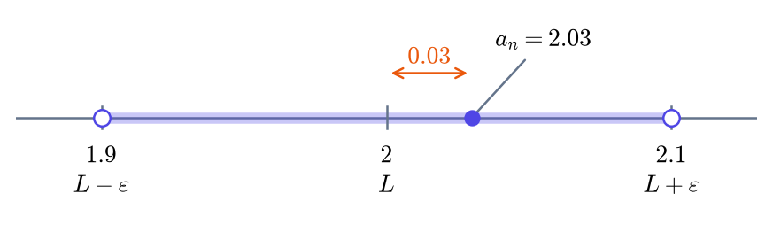
הגדרת הגבול
הגדרה 2.2.2 — גבול של סדרה.
הסדרה \((a_n)\) מתכנסת למספר \(L\) אם לכל \(\varepsilon>0\) יש אינדקס טבעי \(N\) כך שלכל \(n\ge N\) מתקיים \[|a_n-L|<\varepsilon.\] המספר \(L\) נקרא הגבול של הסדרה. כותבים \[\lim_{n\to\infty}a_n=L\qquad\text{או}\qquad a_n\to L.\] אומרים גם שהסדרה שואפת אל \(L\). סדרה שאינה מתכנסת למספר ממשי נקראת מתבדרת.
השגיאה המותרת קובעת איזה הבדל נחשב זניח לצורך הקירוב. אם \(|a_n-L|<\varepsilon\), האיבר \(a_n\) קרוב מספיק אל \(L\) ברמת הדיוק שבחרנו. בציור סכמטי אפשר לייצג את כל המספרים בקטע \((L-\varepsilon,L+\varepsilon)\) בנקודה אחת המסומנת \(L\); אין פירוש הדבר שהם שווים בדיוק.
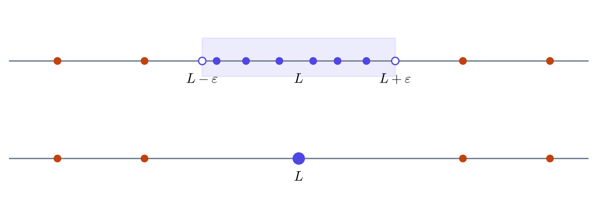
בציור העליון מסמנים כל איבר לפי ערכו; בתחתון מייצגים יחד את הקירובים שמספיקים ברמת הדיוק שבחרנו.
בסדרה המתכנסת אל \(L\), לכל \(\varepsilon>0\) יש רק מספר סופי של איברים מחוץ לקטע הזה. לכן בייצוג הסכמטי נשארים רק מספר סופי של איברים לצד נקודת היעד. סופרים איברים, לא ערכים שונים: כל הופעה חוזרת נספרת בנפרד. בגרף \((n,a_n)\) האיברים עדיין מופיעים בנקודות נפרדות, מפני שהאינדקסים שונים.
חשוב לזכור — הערות על הגדרת הגבול.
בהגדרה יש שתי דרישות:
- החל מהאינדקס \(N\), כל האיברים קרובים אל \(L\). איבר קרוב אחד אינו מספיק, וגם אינסוף איברים קרובים אינם מספיקים אם ביניהם ממשיכים להופיע איברים רחוקים.
- הדבר צריך להתקיים עבור כל שגיאה מותרת חיובית.
את \(N\) בוחרים לפי \(\varepsilon\). קודם קובעים את השגיאה המותרת, ורק אחר כך מוצאים אינדקס שממנו והלאה כל האיברים עומדים בדרישה. ככל שמקטינים את \(\varepsilon\), דורשים דיוק גבוה יותר, ובדרך כלל צריך לבחור \(N\) גדול יותר. אין דרישה למצוא \(N\) אחד שמתאים לכל ערכי \(\varepsilon\).
לא בכל הקטנה של \(\varepsilon\) חייבים להגדיל את \(N\): לפעמים האינדקס שכבר בחרנו מספיק גם לדרישה החדשה.
אפשר לחשוב על הקטע \((L-\varepsilon,L+\varepsilon)\) כעל ״בית״ סביב הגבול. האיברים הראשונים יכולים להיכנס אליו ולצאת ממנו; הדרישה היא שמאינדקס מסוים והלאה נכנסים לבית ולא יוצאים ממנו עוד. צריך להבטיח זאת לכל גודל של הבית, גם כשהוא קטן מאוד.
בתוך הבית אפשר גם להתרחק מהמרכז, כל עוד נשארים בתוך הבית. אין דרישה שהשגיאה תקטן בכל צעד: ייתכן גם ש \[|a_{n+1}-L|>|a_n-L|.\]
הסימון \(n\to\infty\) מתאר אינדקס שהולך וגדל. הוא אינו אומר שהאיברים עצמם גדלים; למשל, איברי הסדרה \(\frac1n\) דווקא קטנים.
דורשים \(\varepsilon>0\) כי מרחק קטן מאפס אינו אפשרי. השגיאה בפועל יכולה להיות אפס: בסדרה הקבועה \(a_n=4\), כל האיברים שווים בדיוק לגבול \(4\).
הגבול אינו חייב להיות איבר בסדרה.
אין צורך למצוא את האינדקס הקטן ביותר. מספיק לבחור \(N\) כך שכל האיברים באינדקסים \(N,N+1,N+2,\ldots\) יקיימו את הדרישה.
משתמשים בהגדרה
דוגמה 2.2.3 — מאיזה אינדקס הקירוב מספיק טוב?
נבחן את הסדרה \[a_n=\frac1n.\] איבריה הראשונים הם \[1,\ \frac12,\ \frac13,\ \frac14,\ldots\] נבדוק אם איבריה נעשים קרובים לאפס. השגיאה של האיבר \(a_n\) היא \[\left|\frac1n-0\right|=\frac1n.\]
תחילה נדרוש שגיאה קטנה מ \(0.1\). מכיוון ש \(n>0\), אפשר לכפול בו בלי לשנות את כיוון האי־שוויון: \[\begin{aligned} \frac1n&<0.1,\\ 1&<0.1n,\\ 10&<n. \end{aligned}\] האינדקסים הם מספרים טבעיים, ולכן כל האיברים החל מהאינדקס \(11\) עומדים בדרישה.
לכן אפשר לבחור \(N=11\). גם \(N=20\) מתאים: כל האינדקסים שממנו והלאה גדולים מ \(10\).
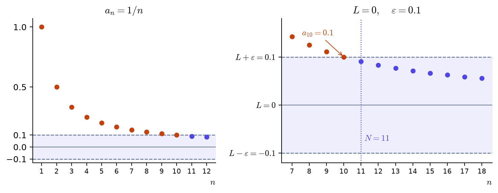
משמאל רואים את האיברים הראשונים; מימין רואים מקרוב את הרצועה סביב \(L=0\). האיבר \(a_{10}=0.1\) נמצא על שפת הרצועה, ולכן אינו עומד בדרישה \(|a_n|<0.1\). החל מ \(N=11\) האיברים בתוכה ונשארים בה.
כעת נדרוש שגיאה קטנה מ \(0.001\).
האי־שוויון \(\frac1n<0.001\) מתקיים כאשר \(n>\) \(1000\).
בחרו אינדקס מתאים: \(N=\) \(1001\).
כפלו ב \(n\) וחלקו ב \(0.001\). שימו לב: שגיאה השווה ל \(0.001\) אינה קטנה ממנה.
האי־שוויון שקול ל \(n>1000\). אפשר לבחור \(N=1001\), \(N=2000\) או כל אינדקס טבעי גדול יותר מ \(1000\).
עבור \(\varepsilon=0.1\) הספיק לבחור \(N=11\). כשמקטינים את השגיאה המותרת ל \(\varepsilon=0.001\), האינדקס הזה כבר אינו מתאים: צריך להתחיל מאינדקס גדול יותר, למשל \(N=1001\).
אותו חישוב עובד לכל שגיאה מותרת \(\varepsilon>0\): \[\frac1n<\varepsilon\quad\Longleftrightarrow\quad n>\frac1\varepsilon.\] קטנה ככל שתהיה השגיאה המותרת, אפשר לבחור אינדקס טבעי \(N>\frac1\varepsilon\). כל האיברים החל ממנו יעמדו בדרישה. לכן \(\frac1n\to0\), אף שאף איבר בסדרה אינו שווה לאפס.
בדיקה עצמית — אינדקס, איבר וגבול.
בסדרה הקבועה \(a_n=4\), מהי השגיאה ביחס לגבול \(4\)?
\(|a_n-4|=\) \(0\).
עבור \(\varepsilon=0.0001\), אפשר לבחור \(N=\) \(1\).
השגיאה היא אפס בכל אינדקס. לכן כל אינדקס טבעי מתאים, גם כשדורשים שגיאה קטנה מאוד.
אם נבחר \(\varepsilon\) קטן עוד יותר, האם נצטרך להחליף את \(N\) שבחרנו באינדקס גדול יותר?
לא. בסדרה הזאת השגיאה תמיד אפס, ואפס קטן מכל \(\varepsilon>0\). אותו \(N\) מתאים לכל שגיאה מותרת חיובית.
אם האינדקסים גדלים, גם איברי הסדרה חייבים לגדול.
האינדקסים גדלים בכל סדרה. האיברים יכולים לגדול, לקטון, להישאר קבועים או לשנות כיוון.
סימולציה 2.2.4 — כל האיברים בתוך הרצועה.
בחרו סדרה ושגיאה מותרת. הרצועה מסמנת את התנאי \(L-\varepsilon<a_n<L+\varepsilon\). איבר שבתוכה מסומן בכחול, ואיבר שאינו עומד בתנאי מסומן באדום.
בחרו \(N\) ובדקו אותו. הקטינו את השגיאה המותרת ובדקו אם אותו \(N\) עדיין מתאים. המטרה היא שכל האיברים החל ממנו יהיו בתוך הרצועה, גם אלה שאינם מוצגים בגרף.
אחר כך בחרו \((-1)^n\) ושגיאה מותרת קטנה מ \(1\). בדקו מדוע בחירת אינדקס מאוחר יותר אינה פותרת את הבעיה.
על הישר הממשי רואים את אותה דרישה כקטע סביב הגבול. למשל, עבור \[a_n=1+\frac{(-1)^n}{n},\qquad L=1,\qquad\varepsilon=0.3,\] רק שלושת האיברים הראשונים מחוץ לקטע. כל האיברים שאחריהם בתוכו, אף שהם מתחלפים משני צדי הגבול.

בדיקה עצמית — מה אפשר ללמוד מהציור?
האם מספיק לבדוק שרק האיבר \(a_N\) נמצא ברצועה?
לא. גם כל האיברים שאחריו צריכים להיות בתוכה.
סדרה מתכנסת חייבת להישאר תמיד באותו צד של הגבול.
הסדרה המוצגת מתכנסת אל \(1\), אבל איבריה מתחלפים משני צדיו. הדרישה עוסקת במרחק מהגבול, לא בצד שבו נמצא האיבר.
אם \(a_n\to L\), המרחק מ \(L\) חייב לקטון בכל צעד.
למשל, בסדרה \[1,2,\frac13,\frac23,\frac15,\frac25,\ldots\] כל זוג איברים הוא מהצורה \(\frac1{2k-1},\frac2{2k-1}\), עם \(k=1,2,3,\ldots\). האיבר השני בכל זוג רחוק יותר מאפס מהראשון. בכל זאת, המכנים הולכים וגדלים, ומזוג מתאים והלאה שני האיברים קטנים מכל שגיאה חיובית שנבחר. לכן הסדרה מתכנסת לאפס, למרות ההתרחקויות החוזרות.
תכונות בסיסיות של הגבול
האיברים החל מאינדקס מסוים נקראים זנב של הסדרה. למשל, הזנב שמתחיל באינדקס \(5\) הוא \[a_5,a_6,a_7,\ldots\] ההתכנסות והגבול תלויים רק בזנב: האיברים שלפניו אינם משפיעים עליהם.
טענה 2.2.5 — שינוי של מספר סופי של איברים.
שינוי של מספר סופי של איברים אינו משנה את הגבול או את עצם ההתכנסות.
למשל, אם נחליף את שלושת האיברים הראשונים של \(\frac1n\) במספרים \(100\), \(-1000\) ו \(7\), הזנב נשאר אותו זנב. כשבוחרים \(N\) אפשר להתקדם מעבר לאיברים ששינינו, ולכן הגבול נשאר \(0\).
בדיקה עצמית.
שינינו את מיליון האיברים הראשונים של סדרה המתכנסת אל \(2\). האם הגבול יכול להשתנות?
מיליון הוא עדיין מספר סופי. האיברים שמאותו שלב והלאה נשארו ללא שינוי, ולכן הגבול נשאר \(2\).
משפט 2.2.6 — יחידות הגבול.
לסדרה מתכנסת יש גבול אחד בלבד.
אפשר לבחור סביב שני מספרים שונים קטעים קטנים שאינם נפגשים. אילו שניהם היו גבולות, כל איבר מאינדקס מתאים והלאה היה צריך להיות בשני הקטעים באותו זמן. זה אינו אפשרי.
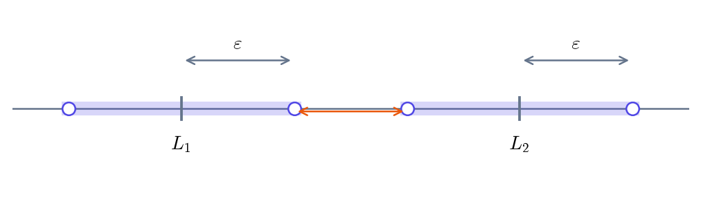
שתי התנהגויות באותה סדרה
בסדרה \(a_n=(-1)^n\) הסימן מתחלף בכל צעד. נבחן בנפרד את האיברים באינדקסים הזוגיים ואת האיברים באינדקסים האי־זוגיים.
הגדרה 2.2.7 — תת־סדרה.
בוחרים אינדקסים טבעיים \(n_1,n_2,n_3,\ldots\), כך שבכל בחירה מתקדמים לאינדקס גדול יותר: \[n_{k+1}>n_k.\] האיברים שנבחרו הם \[a_{n_1},a_{n_2},a_{n_3},\ldots\] זוהי תת־סדרה של \((a_n)\), ומסמנים אותה \((a_{n_k})\).
האינדקס \(k\) סופר את האיברים בתת־הסדרה; \(n_k\) הוא האינדקס של האיבר שנבחר בסדרה המקורית. אפשר לדלג על איברים, אבל לא לחזור לאחור או לבחור שוב את אותו אינדקס.
למשל, אם בוחרים \(n_k=2k\), מקבלים את האיברים באינדקסים הזוגיים: \[a_2,a_4,a_6,\ldots\]
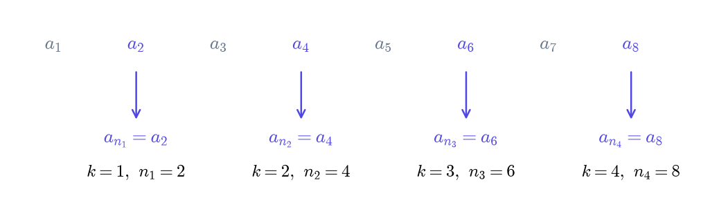
נבחן את הסדרה \[1,2,3,4,5,6,\ldots\] הסדרה \[2,4,6,\ldots\] היא תת־סדרה שלה: בחרנו איברים מהסדרה המקורית ושמרנו על הסדר שבו הם מופיעים.
לעומת זאת, הסדרה \[2,1,3,4,5,6,\ldots\] אינה תת־סדרה שלה. אלה אותם מספרים, אבל הסדר השתנה: אחרי שבחרנו את האיבר \(2\), אי אפשר לחזור לאינדקס של האיבר \(1\).
כל סדרה היא תת־סדרה של עצמה. אין חובה לדלג על איברים: בוחרים \(n_k=k\), ומקבלים את כל האיברים באותו סדר.
בדיקה עצמית — מה מותר לבחור?
האם \(1,1,2,3,4,\ldots\) היא תת־סדרה של \(1,2,3,4,\ldots\)?
לא. המספר \(1\) מופיע בסדרה המקורית פעם אחת בלבד, ואי אפשר לבחור את אותו אינדקס פעמיים. ערכים שווים יכולים להופיע בתת־סדרה רק אם הם מופיעים באינדקסים שונים בסדרה המקורית.
משפט 2.2.8 — הגבול של תת־סדרה.
אם סדרה מתכנסת אל \(L\), כל תת־סדרה שלה מתכנסת גם היא אל \(L\).
לכן, אם שתי תתי־סדרות מתכנסות למספרים שונים, הסדרה המקורית אינה מתכנסת.
בחירת חלק מהאיברים אינה משנה את העובדה שכל האיברים מאינדקס מסוים והלאה קרובים לגבול. לכן תת־סדרה של סדרה מתכנסת אינה יכולה להוביל לגבול אחר.
דוגמה 2.2.9 — מפרידים בין אינדקסים זוגיים לאי־זוגיים.
נחזור אל \(a_n=(-1)^n\). נסמן את האינדקס של כל תת־סדרה באות \(k\).
כאשר \(k=1,2,3,\ldots\):
- האינדקסים \(2k\) הם \(2,4,6,\ldots\);
- האינדקסים \(2k-1\) הם \(1,3,5,\ldots\).
| תת־הסדרה | האיבר הכללי | הגבול |
|---|---|---|
| \(a_{2k}\) | \(1\) | \(1\) |
| \(a_{2k-1}\) | \(-1\) | \(-1\) |
קיבלנו שתי סדרות קבועות עם גבולות שונים. אילו הסדרה המקורית הייתה מתכנסת, שתי תתי־הסדרות היו מתכנסות לאותו גבול. לכן \((-1)^n\) אינה מתכנסת.
בדיקה עצמית — תת־סדרה אחת אינה מספיקה.
בסדרה \((-1)^n\) יש תת־סדרה המתכנסת אל \(1\). האם נובע מכך שהסדרה כולה מתכנסת?
לא. האיברים השווים \(-1\) ממשיכים להופיע. תת־סדרה מתכנסת אחת אינה אומרת מה קורה לאיברים שלא בחרנו.
תרגילים
שאלה 2.2.10 — מהאי־שוויון לבחירת אינדקס.
נתונה \(a_n=\frac1n\). מצאו אינדקס \(N\) כך שלכל \(n\ge N\) המרחק של \(a_n\) מאפס יהיה קטן מ \(0.02\).
פתרו את האי־שוויון, ואז בחרו אינדקס טבעי מתאים.
כופלים ב \(n\). מכיוון ש \(n>0\), כיוון האי־שוויון נשמר.
מחלקים ב \(0.02\).
כותבים את האינדקס משמאל.
האינדקס חיובי, ולכן אפשר להתחיל בכפל ב \(n\).
אפשר לבחור \(N=\) \(51\).
כל אינדקס טבעי \(N\ge51\) מתאים. באינדקס \(50\) השגיאה שווה ל \(0.02\), ולכן \(N=50\) אינו מתאים.
שאלה 2.2.11 — קירוב למספר שאינו אפס.
נתונה \(a_n=1+\frac2n\). מצאו אינדקס \(N\) כך שלכל \(n\ge N\) המרחק של \(a_n\) מ \(1\) יהיה קטן מ \(0.01\).
מפרקים את הערך המוחלט לאי־שוויון כפול.
מפשטים את האגף האמצעי: \(1+\frac2n-1=\frac2n\).
כופלים את כל האגפים במספר החיובי \(100n\). כיוון האי־שוויון נשמר.
כותבים את שני התנאים בנפרד, עם וגם ביניהם.
מכיוון ש \(n>0\), התנאי \(-n<200\) מתקיים תמיד. לכן נשאר רק \(200<n\), כלומר \(n>200\).
התחילו מהמרחק מ \(1\), ולא מהאיבר \(a_n\) עצמו.
אפשר לבחור \(N=\) \(201\).
מצאנו \(n>200\). כל אינדקס טבעי \(N\ge201\) מבטיח שהדרישה תתקיים ממנו והלאה.
שאלה 2.2.12 — קירוב מהצד השני.
נתונה \(a_n=3-\frac4n\). מצאו אינדקס \(N\) כך שלכל \(n\ge N\) המרחק של \(a_n\) מ \(3\) יהיה קטן מ \(0.05\).
כתבו את אי־השוויון המתאר את הדרישה למרחק, ואז פתרו אותו.
מפשטים את הביטוי בתוך הערך המוחלט.
מכיוון ש \(n>0\), הביטוי \(-\frac4n\) שלילי. הערך המוחלט שלו הוא \(\frac4n\).
כופלים במספר החיובי \(n\).
מחלקים ב \(0.05\) וכותבים את האינדקס משמאל.
גם כשהאיבר קטן מ \(3\), השגיאה אינה שלילית: היא מרחק.
אפשר לבחור \(N=\) \(81\).
האי־שוויון שקול ל \(n>80\), ולכן כל אינדקס טבעי \(N\ge81\) מתאים.
שאלה 2.2.13 — מה קובעת ההגדרה?
בחרו כן או לא. בסעיפים שבהם מבוקש מספר, כתבו אותו.
(א) עבור \(a_n=\frac1n\) ו \(\varepsilon=0.1\), האם \(N=10\) מתאים? לא
ומה לגבי \(N=100\)? כן
(ב) החלפנו את מאה האיברים הראשונים של \(\frac1n\) במספר \(1000\). הגבול של הסדרה החדשה הוא \(0\).
(ג) בסדרה \((-1)^n\), יש אינסוף איברים השווים \(1\). האם היא מתכנסת אל \(1\)? לא
המרחק מ \(1\) של כל איבר באינדקס אי־זוגי הוא \(2\).
(ד) מאה האיברים הראשונים של סדרה נמצאים במרחק קטן מ \(0.001\) מהמספר \(5\). האם מכך בלבד אפשר להסיק שהגבול הוא \(5\)? לא
(א) באינדקס \(10\) השגיאה שווה ל \(0.1\), ואילו החל מאינדקס \(100\) היא לכל היותר \(0.01\).
(ב) שינוי של מספר סופי של איברים אינו משנה את הגבול.
(ג) האיברים באינדקסים האי־זוגיים נשארים במרחק \(2\) מהמספר \(1\).
(ד) לא נתון דבר על האיברים הבאים. למשל, כולם יכולים להיות שווים לאפס.
שאלה 2.2.14 — זוגיים ואי־זוגיים.
נתונה \(a_n=2+(-1)^n\). מצאו את שתי תתי־הסדרות וקבעו אם הסדרה מתכנסת.
| תת־הסדרה | האיבר הכללי | הגבול |
|---|---|---|
| \(a_{2k}\) | \(3\) | \(3\) |
| \(a_{2k-1}\) | \(1\) | \(1\) |
האם \((a_n)\) מתכנסת? לא
הציבו \(2k\) במקום \(n\) עבור האינדקסים הזוגיים, ו \(2k-1\) עבור האינדקסים האי־זוגיים.
באינדקסים הזוגיים מתקבל \(3\), ובאי־זוגיים מתקבל \(1\). הגבולות שונים, ולכן הסדרה אינה מתכנסת.
שאלה 2.2.15 — סימן מתחלף ומרחק קטן.
נתונה \(a_n=\frac{(-1)^n}{n}\). בדקו את המרחק מאפס.
כתבו את המרחק מאפס לאחר פישוט: \(\frac{1}{n}\).
מהו גבול הסדרה? \(0\)
עבור שגיאה קטנה מ \(0.01\), אפשר לבחור \(N=\) \(101\).
הערך המוחלט של \((-1)^n\) הוא \(1\), גם כשהסימן של האיבר שלילי.
המרחק מאפס הוא \(\frac1n\), וכבר ראינו שהוא נעשה קטן מכל שגיאה מותרת. לכן הסדרה מתכנסת לאפס. לשגיאה קטנה מ \(0.01\) מספיק לבחור אינדקס טבעי גדול מ \(100\).
2.3 גבולות מוכרים וחשבון גבולות
בחישוב לפי ההגדרה חיפשנו בכל פעם אינדקס מתאים לשגיאה המותרת. לא צריך לחזור על העבודה הזאת בכל תרגיל: אפשר להיעזר בגבולות שכבר ידועים ולשלב אותם בעזרת כללי חישוב.
נכיר כמה סדרות שימושיות ואת גבולותיהן. את התוצאות נקבל ללא הוכחה; נלמד לזהות מתי הן מתאימות ואיך משתמשים בהן.
סדרות מוכרות
סדרה קבועה מתכנסת לקבוע שלה: \(c\to c\). הטבלה הבאה מרכזת את משפחות הגבולות הבסיסיות שבהן נשתמש. גבולות שמתקבלים מהן בחיבור, בכפל או בחילוק נחשב בעזרת הכללים, ולא נרשום כעובדות נוספות לזכירה.
משפט 2.3.1 — גבולות בסיסיים.
| הסדרה | הגבול | התנאים |
|---|---|---|
| \(\frac1{n^p}\) | \(0\) | \(p>0\) |
| \(q^n\) | \(0\) | \(|q|<1\) |
| \(\sqrt[n]{a}\) | \(1\) | \(a>0\) קבוע |
| \(\sqrt[n]{n}\) | \(1\) | |
| \(\frac{n^p}{q^n}\) | \(0\) | \(p>0\), \(q>1\) |
הפרמטרים \(p\), \(q\) ו \(a\) קבועים; האינדקס \(n\) הוא שמשתנה.
דוגמה 2.3.2 — הגבולות הבסיסיים בתמונות.
חזקות ששואפות לאפס. עבור \(p>0\) מתקיים \[\frac1{n^p}\longrightarrow0.\] המכנה גדל וההופכי שלו קטן לאפס. זה כולל גם שורשים: \(\frac1{\sqrt n}=\frac1{n^{1/2}}\). בציור רואים את המקרים \(p=\frac12\), \(p=1\) ו \(p=2\).
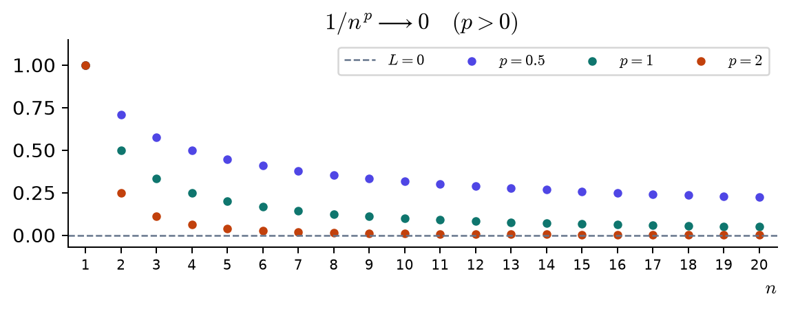
סדרה הנדסית. עבור \(|q|<1\) מתקיים \[q^n\longrightarrow0.\] בכל צעד הערך המוחלט מוכפל ב \(|q|\). כש \(q<0\), גם הסימן מתחלף. שנו את \(q\) בסימולציה: השוו בין \(q=\frac12\) לבין \(q=-\frac12\), ואחר כך בדקו מה קורה כשהתנאי \(|q|<1\) אינו מתקיים.
שורש מסדר הולך וגדל של מספר קבוע. עבור \(a>0\) קבוע מתקיים \[\sqrt[n]{a}\longrightarrow1.\] חשוב להבחין בין \(\sqrt n\), שבו המספר מתחת לשורש גדל, לבין \(\sqrt[n]{a}\), שבו \(a\) קבוע וסדר השורש גדל. למשל, \[\sqrt{16}=4,\] \[\sqrt[4]{16}=2,\] \[\sqrt[8]{16}=\sqrt2\approx1.414.\] בסימולציה בחרו מספר גדול מ \(1\), ואחריו מספר שבין \(0\) ל \(1\). מאיזה צד מתקרבים אל \(1\) בכל מקרה?
שורש של האינדקס עצמו. גם כשהמספר שמתחת לשורש הוא \(n\), מתקיים \[\sqrt[n]{n}\longrightarrow1.\]
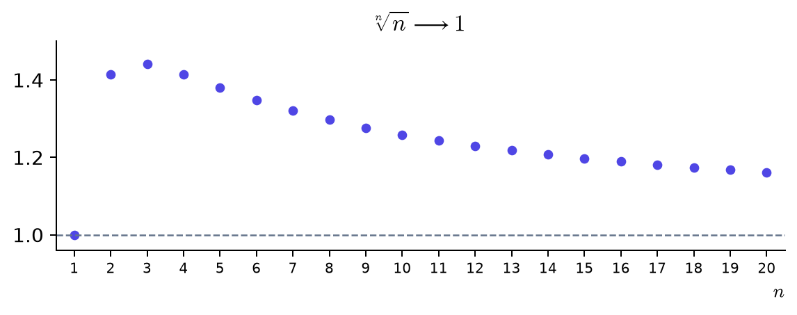
השוואה בין שתי חזקות. עבור \(p>0\) ו \(q>1\) מתקיים \[\frac{n^p}{q^n}\longrightarrow0.\] ב \(n^p\) המעריך קבוע, וב \(q^n\) הבסיס קבוע. אומרים ש \(q^n\) גדלה מהר יותר משום שהמנה שואפת לאפס. למשל, \[\frac{n}{2^n}\longrightarrow0.\] בסימולציה שנו את המעריך והבסיס. המנה אינה חייבת לקטון כבר באיברים הראשונים; הגדילו את מספר האיברים המוצגים כדי לבדוק מה קורה בהמשך.
דוגמה 2.3.3 — מזהים את הסדרה המוכרת.
התאימו כל סדרה לאחת הצורות שבטבלה וחשבו את גבולה.
(א) \(\left(-\frac12\right)^n\)
המנה היא \(q=\) \(-\frac{1}{2}\), והגבול הוא \(0\).
(ב) \(\frac1{\sqrt n}\)
נכתוב \(\sqrt n=n^p\), כאשר \(p=\) \(\frac{1}{2}\). הגבול הוא \(0\).
(ג) \(\frac{n^3}{2^n}\)
המעריך הקבוע הוא \(p=\) \(3\).
הבסיס הקבוע הוא \(q=\) \(2\).
הגבול הוא \(0\).
(א) הערך המוחלט של המנה הוא \(\frac12<1\). הסימן מתחלף, אך האיברים מתקרבים לאפס.
(ב) משתמשים בגבול של \(\frac1{n^p}\) עבור \(p=\frac12\).
(ג) משתמשים בגבול של \(\frac{n^p}{q^n}\), עם \(p=3\) ו \(q=2>1\).
בדיקה עצמית.
מהכלל עבור \(q^n\) נובע שגם \((-1)^n\to0\).
כאן \(|q|=1\), ולכן התנאי \(|q|<1\) אינו מתקיים. כבר ראינו שסדרה זו אינה מתכנסת.
מה קורה ל \(\frac1{n^p}\) כאשר \(p=0\)?
כל האיברים שווים \(1\). לכן התנאי \(p>0\) נחוץ.
המספר e
בסדרה הבאה גם הבסיס וגם המעריך משתנים: \[a_n=\left(1+\frac1n\right)^n.\] סדרה זו מתכנסת למספר \(e\), שכבר פגשנו בבסיס של הפונקציה המעריכית. נקבל כאן את ההתכנסות ללא הוכחה.
הגדרה 2.3.4 — המספר e.
הגבול של הסדרה \(\left(1+\frac1n\right)^n\) נקרא \(e\): \[\lim_{n\to\infty}\left(1+\frac1n\right)^n=e\approx2.71828.\]

הגרף ממחיש שהאיברים עולים ומתקרבים אל \(e\). הקו בגובה \(3\) נמצא מעל כולם; הוא אינו הגבול.
שימו לב — הבסיס והמעריך משתנים יחד.
אמנם \(1+\frac1n\to1\), אבל המעריך \(n\) אינו קבוע. לכן אי אפשר להחליף את הבסיס ב \(1\) ולהסיק שהגבול הוא \(1\).
פעולות על סדרות מתכנסות
משפט 2.3.5 — חשבון גבולות.
נניח שלשתי הסדרות יש גבולות סופיים: \(\lim_{n\to\infty}a_n=A\) ו \(\lim_{n\to\infty}b_n=B\). אז \[\lim_{n\to\infty}(a_n+b_n)=\lim_{n\to\infty}a_n+\lim_{n\to\infty}b_n=A+B,\] \[\lim_{n\to\infty}(a_n-b_n)=\lim_{n\to\infty}a_n-\lim_{n\to\infty}b_n=A-B,\] \[\lim_{n\to\infty}(a_nb_n)=\left(\lim_{n\to\infty}a_n\right)\left(\lim_{n\to\infty}b_n\right)=AB.\] אם נוסף על כך \(B\ne0\), אז \[\lim_{n\to\infty}\frac{a_n}{b_n}=\frac{\lim_{n\to\infty}a_n}{\lim_{n\to\infty}b_n}=\frac AB.\] אפשר לקרוא את השוויונות בשני הכיוונים: להוציא את הפעולה מחוץ לגבול, או להכניס אותה לתוכו. התנאים נשארים אותם תנאים. הסדרות והמנות צריכות להיות מוגדרות, לפחות החל מאינדקס מסוים.
הרעיון הוא שאם שני איברים מספיק קרובים לשני מספרים, גם סכומם ומכפלתם קרובים לסכום ולמכפלה של אותם מספרים. בחילוק צריך להיזהר: כשהמכנה קרוב לאפס, אפילו שינוי קטן בו יכול לשנות מאוד את המנה. לכן כלל המנה דורש שגבול המכנה יהיה שונה מאפס.
אפשר להשתמש בכללים כמה פעמים באותו חישוב. כפל בקבוע הוא מקרה פרטי של כפל סדרות, כי סדרה קבועה מתכנסת לקבוע שלה.
דוגמה 2.3.6 — מחשבים בעזרת הגבולות המוכרים.
חשבו את הגבול של \(3+\frac2n\).
כותבים \(\frac2n=2\cdot\frac1n\) כדי לזהות את הגבול המוכר.
מוציאים את החיבור מחוץ לגבול לפי משפט 2.3.5.
גבול של סדרה קבועה הוא הקבוע עצמו.
מוציאים את הכפל מחוץ לגבול. לשני הגורמים יש גבולות סופיים.
מחשבים את הגבול של הסדרה הקבועה \(2\).
משתמשים בגבול המוכר \(\lim_{n\to\infty}\frac1n=0\).
מחשבים את התוצאה.
אפשר להוציא את החיבור, ואחריו את הכפל, מחוץ לגבול. בכל שלב בחרו את הגבול שעליו עובדים.
דוגמה 2.3.7 — גבול מוכר וגבול שמחשבים ממנו.
(א) חשבו את גבול הסדרה \(\left(\frac23\right)^n\). בעוזר הפתרון בחרו ״גבול מוכר״.
זו הסדרה \(q^n\) עם \(q=\frac23\), ולכן משתמשים ישירות ב משפט 2.3.1.
(ב) חשבו את גבול הסדרה \(\frac5n\). כאן בחרו ״חשבון גבולות״.
כותבים את המנה כמכפלה: \[\frac5n=5\cdot\frac1n.\] הסדרה \(\frac1n\) שואפת לאפס. כפל בקבוע נותן \[\frac5n\to5\cdot0=0.\] אין צורך לזכור זאת כגבול נפרד.
טענה 2.3.8 — חזקות קבועות ושורשים.
אם \(a_n\to A\), אז \(a_n^k\to A^k\) לכל מספר טבעי קבוע \(k\).
אם האיברים אי־שליליים, הכלל נכון לכל מעריך ממשי חיובי וקבוע \(p\): \[\lim_{n\to\infty}a_n^p=\left(\lim_{n\to\infty}a_n\right)^p=A^p.\] בפרט, כש \(p=\frac12\) מתקבל כלל השורש: \(\sqrt{a_n}\to\sqrt A\).
אם \(A>0\), הכלל נכון גם למעריכים ממשיים שליליים; אז האיברים חיוביים לפחות החל מאינדקס מסוים.
למשל, \(\sqrt{4+\frac1n}\to2\). שימו לב להבדל בין חזקה קבועה, כמו \(a_n^2\), לבין החזקה המשתנה בדוגמה של \(e\).
טענה 2.3.9 — אי־שוויונות במעבר לגבול.
אם \(a_n\le b_n\) החל מאינדקס מסוים, ושתי הסדרות מתכנסות אל \(A\) ואל \(B\) בהתאמה, אז \(A\le B\).
גם אם בכל איבר מתקיים אי־שוויון ממש, בגבול יכול להתקבל שוויון. למשל, \(\frac1n>0\) לכל \(n\), אך הגבול הוא \(0\).
שימו לב — כשגבול המכנה הוא אפס.
אם גם המונה וגם המכנה שואפים לאפס, כלל המנה אינו קובע את הגבול. למשל, \[\frac{1/n}{1/n}=1,\] \[\frac{2/n}{1/n}=2.\] בשתי הדוגמאות גבולות המונה והמכנה הם אפס, אבל גבולות המנות שונים. הסימון \(\frac00\) נקרא צורה לא מוגדרת: הוא מצביע על כך שצריך לפשט את הביטוי או להשתמש בכלל אחר, ולא על תשובה.
תרגילים
שאלה 2.3.10 — גבולות מוכרים.
חשבו כל גבול וציינו באיזו משפחת גבולות מוכרים השתמשתם.
(א) \(\left(\frac34\right)^n\to\) \(0\)
הגבול המוכר שבו השתמשתם: סדרה הנדסית.
(ב) \(\sqrt[n]{5}\to\) \(1\)
הגבול המוכר שבו השתמשתם: שורש של מספר קבוע.
(ג) \(\frac{n^2}{2^n}\to\) \(0\)
הגבול המוכר שבו השתמשתם: חזקה חלקי סדרה הנדסית.
(ד) \(\sqrt[n]{n}\to\) \(1\)
הגבול המוכר שבו השתמשתם: שורש של האינדקס.
(א) משתמשים ב \(q^n\to0\) עבור \(q=\frac34\), המקיים \(|q|<1\).
(ב) משתמשים ב \(\sqrt[n]{a}\to1\) עבור המספר הקבוע \(a=5>0\).
(ג) משתמשים ב \(\frac{n^p}{q^n}\to0\) עבור \(p=2>0\) ו \(q=2>1\).
(ד) משתמשים ישירות בגבול \(\sqrt[n]{n}\to1\).
כל ארבעת הגבולות מופיעים ב משפט 2.3.1.
שאלה 2.3.11 — משלבים כללי חישוב.
חשבו את הגבולות. אפשר להיעזר בעוזר הפתרון ולכתוב את שלבי החישוב.
(א) \(\lim_{n\to\infty}\frac{2+1/n}{5-1/n}\)
הסדרה \(\frac1n\) שואפת לאפס, וגבול המכנה הוא \(5\ne0\).
מחשבים את המנה.
(ב) \(\lim_{n\to\infty}\left(2\left(1+\frac1n\right)^n+\frac1n\right)\)
משתמשים בהגדרת \(e\) ובגבול של \(\frac1n\).
מחשבים את התוצאה המדויקת, בלי להחליף את \(e\) בקירוב עשרוני.
שאלה 2.3.12 — בונים חישוב בעזרת הכללים.
חשבו את הגבולות. בחרו בעצמכם את שלבי החישוב ואת הכללים המתאימים.
(א) \(\displaystyle\lim_{n\to\infty}\left(5-\frac3n+\frac2{n^2}\right)\)
הסדרות \(\frac3n\) ו \(\frac2{n^2}\) שואפות לאפס. משתמשים בחיבור ובחיסור לפי משפט 2.3.5.
מחשבים את התוצאה.
(ב) \(\displaystyle\lim_{n\to\infty}\frac{3-2/n}{4+1/n^2}\)
גבול המכנה הוא \(4\), ולכן מותר להשתמש בכלל המנה מתוך משפט 2.3.5.
מחשבים את המנה.
(ג) \(\displaystyle\lim_{n\to\infty}\sqrt{9+\frac4n}\)
הביטוי מתחת לשורש חיובי ושואף אל \(9\). משתמשים ב טענה 2.3.8.
מחשבים את השורש.
(ד) \(\displaystyle\lim_{n\to\infty}\left(\left(\frac25\right)^n+\frac{n^2}{3^n}\right)\)
שתי הסדרות מופיעות ב משפט 2.3.1. לאחר זיהוי גבולותיהן משתמשים בכלל החיבור.
מחשבים את הסכום.
שאלה 2.3.13 — האם מותר להשתמש בכלל?
בכל סעיף בחרו כן או לא.
(א) המונה שואף ל \(2\) והמכנה שואף ל \(3\). האם כלל המנה נותן גבול \(\frac23\)? כן
(ב) המונה והמכנה שואפים לאפס. האם מכאן נובע שגם המנה שואפת לאפס? לא
(ג) \(a_n\to1\). האם מכאן בלבד נובע ש \(a_n^n\to1\)? לא
(א) גבול המכנה שונה מאפס, ולכן כלל המנה חל.
(ב) למשל, המנה \(\frac{1/n}{1/n}\) שווה תמיד \(1\).
(ג) המעריך משתנה עם \(n\). עבור \(a_n=1+\frac1n\) מתקבל \(a_n^n\to e\), ולא \(1\).
2.4 חסימות, מונוטוניות וקיום של גבול
כדי לבדוק התכנסות לפי ההגדרה, צריך למצוא אינדקס מתאים לכל שגיאה מותרת. לפעמים אפשר להבטיח שהסדרה מתכנסת עוד לפני שמחשבים את גבולה. נכיר שתי תכונות שעוזרות בכך: איברים שנשארים בתחום מוגבל, והתקדמות בכיוון אחד.
חסימות
הגדרה 2.4.1 — סדרה חסומה.
סדרה חסומה מלמעלה אם יש מספר קבוע \(M\) כך שכל איבר קטן ממנו או שווה לו: \[a_n\le M.\] המספר \(M\) נקרא חסם עליון של הסדרה.
סדרה חסומה מלמטה אם יש מספר קבוע \(m\) כך שכל איבר גדול ממנו או שווה לו: \[m\le a_n.\] המספר \(m\) נקרא חסם תחתון של הסדרה.
סדרה היא חסומה אם היא חסומה גם מלמעלה וגם מלמטה. כלומר, כל איבריה נמצאים בין שני מספרים קבועים: \[m\le a_n\le M.\]
דוגמה 2.4.2 — אילו מספרים יכולים לשמש חסמים?
בסדרה \(a_n=\frac1n\) מתקיים \[0\le\frac1n\le1.\] לכן \(0\) הוא חסם תחתון ו \(1\) הוא חסם עליון. אין צורך שחסם יהיה איבר בסדרה: \(0\) אינו אחד האיברים.
גם \(-5\) הוא חסם תחתון, וגם \(10\) הוא חסם עליון. הם מתאימים משום שכל האיברים ביניהם.
בסדרה \(b_n=2+\frac1n\), השלימו את האי־שוויון שמתקבל מהוספת \(2\) לכל האגפים:
\(2\) \(\le2+\frac1n\le\) \(3\).
כתבו חסם עליון לבחירתכם: \(4\).
מהאי־שוויון \(0\le\frac1n\le1\) מקבלים \(2\le2+\frac1n\le3\). לכן \(2\) הוא חסם תחתון, ו \(3\) הוא חסם עליון. כל מספר גדול מ \(3\) מתאים גם הוא כחסם עליון.
לצורך חסימה מספיק אי־שוויון חלש: מחפשים \(a_n\le M\) או \(a_n\ge m\). מותר לאיבר להיות שווה לחסם; אין צורך להוכיח אי־שוויון ממש, שדורש יותר.
אפשר לתאר חסימות גם בעזרת המרחק מאפס: יש מספר \(K\ge0\) כך ש \(|a_n|\le K\) לכל \(n\). למשל, עבור \((-1)^n\) אפשר לבחור \(K=1\).
לעומת זאת, הסדרה \(a_n=n\) חסומה מלמטה על ידי \(1\), אבל אינה חסומה מלמעלה: כל מספר שנבחר כחסם ייעקף כשנבחר אינדקס גדול ממנו. לכן היא אינה סדרה חסומה.
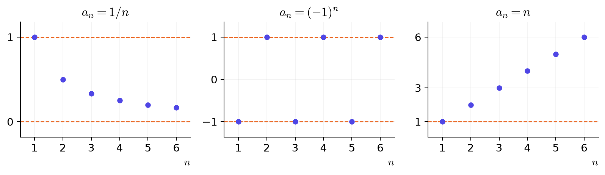
בדיקה עצמית — מה דורש חסם?
כל איבר בסדרה קטן מ \(5\). מכאן שהסדרה חסומה גם מלמעלה וגם מלמטה.
זה נותן חסם עליון בלבד. למשל, כל איברי הסדרה \(-n\) קטנים מ \(5\), אבל אין לה חסם תחתון.
אם \(5\) הוא חסם עליון, גם \(20\) הוא חסם עליון.
כל איבר קטן מ \(5\) או שווה לו, ולכן גם קטן מ \(20\).
משפט 2.4.3 — התכנסות גוררת חסימות.
כל סדרה מתכנסת היא חסומה.
מאינדקס מסוים האיברים נשארים בתחום קטן סביב הגבול. לפניו יש רק מספר סופי של איברים, ואפשר להרחיב את התחום כך שיכלול גם אותם. עם זאת, חסימות לבדה אינה מבטיחה התכנסות: \((-1)^n\) נשארת בין \(-1\) לבין \(1\) ואינה מתכנסת.
דוגמה 2.4.4 — חוסר חסימות שולל התכנסות.
ממשפט משפט 2.4.3 נובעת דרך קצרה לשלול התכנסות: אם סדרה אינה חסומה, היא אינה מתכנסת למספר ממשי.
(א) הסדרה \(a_n=n\) אינה חסומה מלמעלה. לכל חסם מוצע \(M\), אפשר לבחור אינדקס טבעי \(n>M\), ואז \(a_n>M\). לכן הסדרה אינה מתכנסת.
(ב) בסדרה \(b_n=(-1)^n n\) האיברים הם \[-1,2,-3,4,-5,6,\ldots\] הסימן מתחלף, אבל הערכים המוחלטים הם \(|b_n|=n\). הם עולים מעבר לכל חסם, ולכן גם הסדרה הזאת אינה חסומה ואינה מתכנסת.
מה אפשר להסיק על \(c_n=-n\), שאינה חסומה מלמטה?
חוסר חסימות מצד אחד כבר מספיק: סדרה מתכנסת חייבת להיות חסומה משני הצדדים.
מונוטוניות
חסימות מתארת את התחום שבו נמצאים האיברים, אבל אינה אומרת אם הם עולים, יורדים או מחליפים כיוון. כעת נבדוק את הכיוון.
הגדרה 2.4.5 — סדרה מונוטונית.
סדרה היא עולה אם כל איבר גדול מקודמו או שווה לו: \[a_n\le a_{n+1}.\]
סדרה היא יורדת אם כל איבר קטן מקודמו או שווה לו: \[a_n\ge a_{n+1}.\]
סדרה עולה או יורדת נקראת מונוטונית.
בהגדרות האלה מותר שוויון. כאשר \(a_n<a_{n+1}\) לכל \(n\), אומרים עולה ממש; כאשר \(a_n>a_{n+1}\) לכל \(n\), אומרים יורדת ממש.
בתיאורי הגרפים בפרק 1 השתמשנו בקיצור ״עולה״ ו״יורדת״ עבור עלייה וירידה ממש. כאן ההגדרות מאפשרות גם שוויון.
למשל, \(\frac1n\) יורדת ממש, ו \(1-\frac1n\) עולה ממש: ככל ש \(n\) גדל, מחסרים מ \(1\) מספר חיובי קטן יותר. סדרה קבועה היא גם עולה וגם יורדת לפי ההגדרות האלה.
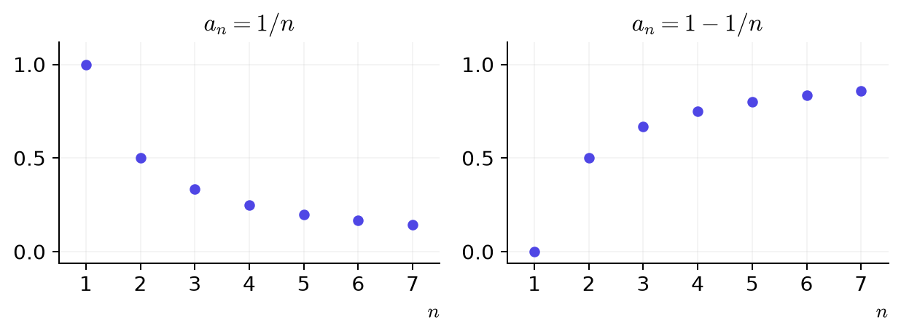
בדיקה עצמית.
חמשת האיברים הראשונים עולים. האם די בכך כדי לקבוע שהסדרה עולה?
ההגדרה דורשת \(a_n\le a_{n+1}\) לכל \(n\). ייתכן שהאיבר השישי קטן מהחמישי.
הסדרה הקבועה \(4,4,4,\ldots\) היא:
כל איבר שווה לקודמו, ולכן שני האי־שוויונות מתקיימים. היא אינה עולה ממש ואינה יורדת ממש.
שיטת פתרון 2.4.6 — בדיקת מונוטוניות: הפרש או מנה.
דרך ההפרש. מחשבים את \(a_{n+1}-a_n\) ובודקים את סימנו לכל אינדקס:
- אם ההפרש תמיד אי־שלילי, הסדרה עולה.
- אם ההפרש תמיד אי־חיובי, הסדרה יורדת.
- אם יש צעד שבו ההפרש חיובי וצעד שבו הוא שלילי, הסדרה אינה מונוטונית.
דרך המנה. אם כל האיברים חיוביים, אפשר לחשב את \(\frac{a_{n+1}}{a_n}\) ולהשוות ל \(1\):
- אם המנה גדולה מ \(1\) או שווה לו בכל האינדקסים, הסדרה עולה.
- אם המנה קטנה מ \(1\) או שווה לו בכל האינדקסים, הסדרה יורדת.
בדרך ההפרש משווים ל \(0\); בדרך המנה משווים ל \(1\). תנאי החיוביות נחוץ לדרך המנה כפי שניסחנו אותה כאן.
בשתי הדרכים, את \(a_{n+1}\) מקבלים מהצבת \(n+1\) במקום \(n\) בנוסחה לאיבר הכללי.
דוגמה 2.4.7 — כותבים את האיבר הבא ומשווים.
נבדוק את המונוטוניות של \(a_n=\frac1n\).
תחילה נכתוב את האיבר הבא: \[a_{n+1}=\frac1{n+1}.\] כעת נחסר: \[\begin{aligned} a_{n+1}-a_n&=\frac1{n+1}-\frac1n\\ &=\frac{n-(n+1)}{n(n+1)}\\ &=-\frac1{n(n+1)}. \end{aligned}\] המכנה חיובי, ולכן ההפרש שלילי לכל \(n\). מכאן שהסדרה יורדת ממש.
אפשר להגיע לאותה מסקנה בדרך המנה. האיברים חיוביים, ומתקיים \[\frac{a_{n+1}}{a_n}=\frac{1/(n+1)}{1/n}=\frac n{n+1}<1.\] המונה קטן מהמכנה החיובי בכל אינדקס, ולכן כל איבר קטן מקודמו.
בדיקה עצמית — האיבר הבא או תוספת של אחת?
נתונה \(a_n=2n+3\).
\(a_{n+1}=\) \(2(n+1)+3\).
\(a_{n+1}-a_n=\) \(2\).
מציבים \(n+1\) במקום \(n\), ולכן \(a_{n+1}=2(n+1)+3=2n+5\). האיבר הבא גדול מקודמו ב \(2\).
האם תמיד מתקיים \(a_{n+1}=a_n+1\)?
לא. תוספת של אחת לאינדקס מעבירה לאיבר הבא; היא אינה מחייבת שהאיבר עצמו יגדל באחת.
מונוטוניות וחסימות יחד
סדרה חסומה יכולה להמשיך לקפוץ בין שני מספרים, וסדרה עולה יכולה לגדול מעבר לכל חסם. כשיש גם כיוון קבוע וגם חסם מתאים, מתקבלת מסקנה חזקה יותר.
משפט 2.4.8 — מונוטונית וחסומה מתכנסת.
כל סדרה עולה וחסומה מלמעלה מתכנסת.
כל סדרה יורדת וחסומה מלמטה מתכנסת.
בפרט, כל סדרה מונוטונית וחסומה מתכנסת.
אפשר לחשוב על איברי סדרה עולה כעל נקודות שמתקדמות ימינה על הישר או נשארות במקומן, בלי לחזור שמאלה. החסם העליון אינו מאפשר להן להתקדם מעבר לו. המשפט מבטיח שבמצב הזה הן מתקרבות למספר מסוים, אבל לא בהכרח לחסם שבחרנו.
גם אם המונוטוניות והחסם המתאים מתקיימים רק החל מאינדקס \(N\), אפשר להפעיל את המשפט על הזנב. אם הזנב מתכנס, גם הסדרה מתכנסת; מספר סופי של איברים בתחילתה אינו משנה זאת. במקרה כזה אומרים שהסדרה עולה או יורדת החל מאותו אינדקס, ולא בהכרח מתחילתה.
בדיקה עצמית.
סדרה עולה וכל איבריה קטנים מ \(5\). מה אפשר להסיק?
למשל, \(1-\frac1n\) עולה וקטנה מ \(5\), אבל גבולה הוא \(1\).
ידוע שסדרה יורדת וחסומה מלמעלה. האם שתי התכונות האלה מבטיחות התכנסות?
לסדרה יורדת דרוש חסם תחתון. למשל, \(a_n=-n\) יורדת וחסומה מלמעלה, אבל אינה מתכנסת למספר ממשי.
שימו לב — מה המשפט אינו אומר.
מונוטוניות לבדה אינה מספיקה: \(a_n=n\) עולה ואינה מתכנסת למספר ממשי.
חסימות לבדה אינה מספיקה: \((-1)^n\) חסומה ואינה מתכנסת.
התכנסות אינה מחייבת מונוטוניות: \(\frac{(-1)^n}{n}\) מתכנסת לאפס, אף שכיוון השינוי מתחלף. ראינו שהמרחק מאפס הוא \(\frac1n\).
דוגמה 2.4.9 — סדרה ברקורסיה: התכנסות וחישוב הגבול.
נתונים \[a_1=1,\qquad a_{n+1}=\sqrt{2+a_n}.\] נרצה לדעת אם הסדרה מתכנסת, ואם כן — לאיזה מספר.
חסימות. האיבר הראשון נמצא בקטע \([1,2]\). אם איבר כלשהו נמצא בקטע הזה, אז \[3\le2+a_n\le4,\] ולכן \[1<\sqrt3\le a_{n+1}\le2.\] גם האיבר הבא נמצא ב \([1,2]\). מתחילים מאיבר שנמצא בקטע, והכלל משאיר כל איבר חדש בתוכו. לכן כל איברי הסדרה בין \(1\) לבין \(2\).
מונוטוניות. שני האיברים העוקבים חיוביים, ולכן אפשר להשוות את הריבועים שלהם. לפי כלל הרקורסיה, \[\begin{aligned} a_{n+1}^2-a_n^2&=2+a_n-a_n^2\\ &=(2-a_n)(a_n+1). \end{aligned}\] שני הגורמים אי־שליליים, משום ש \(1\le a_n\le2\). מכאן \(a_{n+1}^2\ge a_n^2\), ולכן גם \(a_{n+1}\ge a_n\). הסדרה עולה וחסומה מלמעלה, ולכן מתכנסת.
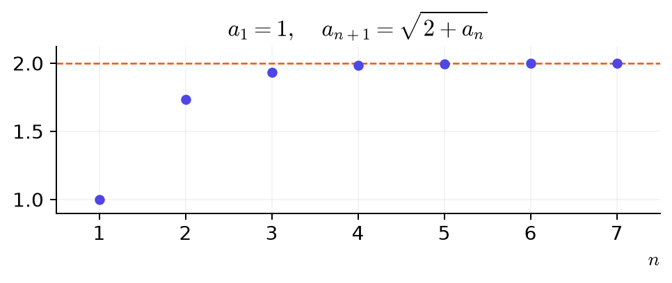
חישוב הגבול. עכשיו, כשידוע שהסדרה מתכנסת, נסמן את גבולה ב \(L\). גם \(a_{n+1}\to L\): השמטת האיבר הראשון אינה משנה את הגבול. לפי כללי החיבור והשורש מתוך משפט 2.3.5 ו טענה 2.3.8, \[L=\sqrt{2+L}.\] נעלה בריבוע ונפשט: \[L^2=2+L,\] \[L^2-L-2=0,\] \[ (L-2)(L+1)=0.\] האפשרויות הן \(L=2\) או \(L=-1\). מכיוון שכל האיברים ב \([1,2]\), גם הגבול בקטע הזה, ולכן \(L=2\).
שימו לב — משוואה לגבול אינה מבטיחה התכנסות.
אם הסדרה מתכנסת, גבולה חייב לקיים את המשוואה. פתרון המשוואה נותן מועמדים בלבד; כדי לקבוע שאחד מהם הוא הגבול צריך גם לבסס התכנסות.
בדיקה עצמית — מה צריך לבדוק לפני שמציבים גבול?
נתונים \(a_1=0\) ו \(a_{n+1}=1-a_n\). המשוואה \(L=1-L\) נותנת \(L=\frac12\). האם זהו גבול הסדרה?
לא. איברי הסדרה הם \(0,1,0,1,\ldots\), ולכן היא אינה מתכנסת. אין כאן גבול שאפשר להציב בכלל הרקורסיה.
תרגילים
שאלה 2.4.10 — חסמים פשוטים.
בכל סעיף מצאו מספר \(K\) כך ש \(|a_n|\le K\) לכל \(n\). אין צורך למצוא את המספר הקטן ביותר.
(א) \(a_n=4(-1)^n\): אפשר לבחור \(K=\) \(4\).
(ב) \(a_n=\frac2n\): אפשר לבחור \(K=\) \(2\).
(ג) \(a_n=1+\frac1n\): אפשר לבחור \(K=\) \(2\).
ב (א) חשבו את הערך המוחלט. ב (ב) ו (ג) השתמשו ב \(0\le\frac1n\le1\).
(א) כל הערכים המוחלטים שווים \(4\).
(ב) מתקיים \(0\le\frac2n\le2\).
(ג) מתקיים \(1\le1+\frac1n\le2\).
בכל סעיף גם מספר גדול מהחסם שמצאנו מתאים.
שאלה 2.4.11 — מונוטוניות, חסם ומסקנה על התכנסות.
נתונה \(a_n=3-\frac1n\). בדקו מונוטוניות בעזרת הפרש או מנה, נמקו חסם מתאים, והסיקו שהסדרה מתכנסת בעזרת שתי התכונות.
אפשר לבדוק את ההפרש: \[\begin{aligned} a_{n+1}-a_n&=\left(3-\frac1{n+1}\right)-\left(3-\frac1n\right)\\ &=\frac1n-\frac1{n+1}\\ &=\frac1{n(n+1)}>0. \end{aligned}\] האינדקס חיובי, ולכן ההפרש חיובי והסדרה עולה.
למציאת חסם נחשב: \[\begin{aligned} 3-a_n&=3-\left(3-\frac1n\right)\\ &=\frac1n\ge0. \end{aligned}\] לכן \(a_n\le3\). הסדרה עולה וחסומה מלמעלה, ולכן מתכנסת לפי משפט 2.4.8.
אפשר גם להשתמש במנה: האיברים חיוביים, ומתקיים \[\begin{aligned} \frac{a_{n+1}}{a_n}&=\frac{n(3n+2)}{(n+1)(3n-1)}\\ &=1+\frac1{(n+1)(3n-1)}>1. \end{aligned}\] גם מכאן נובעת העלייה.
שאלה 2.4.12 — סדרה יורדת וחסם מתאים.
נתונה \(a_n=2+\frac3n\). בדקו מונוטוניות בדרך שתבחרו, נמקו חסם בצד המתאים, והסיקו התכנסות.
\[\begin{aligned} a_{n+1}-a_n&=\frac3{n+1}-\frac3n\\ &=-\frac3{n(n+1)}<0. \end{aligned}\] הסדרה יורדת. נוסף על כך, \[a_n-2=\frac3n\ge0,\] ולכן \(2\) הוא חסם תחתון. סדרה יורדת וחסומה מלמטה מתכנסת.
בדרך המנה אפשר לקבל \[\frac{a_{n+1}}{a_n}=1-\frac3{(n+1)(2n+3)}<1.\] מכיוון שכל האיברים חיוביים, גם השוואה זו מראה שהסדרה יורדת.
שאלה 2.4.13 — בוחרים דרך לבדיקה.
נתונה \(a_n=\frac{n}{n+1}\). הראו שהסדרה מונוטונית וחסומה בצד המתאים, והסיקו התכנסות.
\[\begin{aligned} a_{n+1}-a_n&=\frac{n+1}{n+2}-\frac n{n+1}\\ &=\frac1{(n+1)(n+2)}>0. \end{aligned}\] לכן הסדרה עולה. כדי למצוא חסם נחשב \[1-a_n=1-\frac n{n+1}=\frac1{n+1}\ge0.\] מכאן \(a_n\le1\). הסדרה עולה וחסומה מלמעלה, ולכן מתכנסת.
אפשר גם להשוות את המנה ל \(1\): \[\begin{aligned} \frac{a_{n+1}}{a_n}&=\frac{(n+1)^2}{n(n+2)}\\ &=1+\frac1{n(n+2)}>1. \end{aligned}\] האיברים חיוביים, ולכן המנה מראה שהסדרה עולה.
שאלה 2.4.14 — איזו תכונה חסרה?
השתמשו בשלוש הסדרות \[n,\qquad (-1)^n,\qquad\frac{(-1)^n}{n}.\] בכל סעיף כתבו את הנוסחה של הסדרה המתאימה.
(א) סדרה מונוטונית שאינה חסומה: \(n\).
(ב) סדרה חסומה שאינה מתכנסת: \((-1)^n\).
(ג) סדרה מתכנסת שאינה מונוטונית: \(\frac{(-1)^n}{n}\).
(א) \(n\) עולה, אך אין לה חסם עליון.
(ב) \((-1)^n\) נשארת בין \(-1\) לבין \(1\), אבל שתי תתי־הסדרות לפי זוגיות האינדקס מתכנסות לגבולות שונים.
(ג) המרחק של \(\frac{(-1)^n}{n}\) מאפס הוא \(\frac1n\), ולכן היא מתכנסת לאפס. שלושת איבריה הראשונים הם \(-1,\frac12,-\frac13\): תחילה יש עלייה ואחריה ירידה, ולכן היא אינה מונוטונית.
שאלה 2.4.15 — מה רואים בהתחלה, ומה קורה בהמשך?
נתונה הסדרה \[a_n=\begin{cases} 100,&n=1,\\ \frac1n,&n\ge2. \end{cases}\]
הגבול הוא \(0\).
כתבו חסם עליון לכל איברי הסדרה: \(100\).
האם \(1\) הוא חסם עליון לכל איברי הסדרה? לא
רק האיבר הראשון שונה מהסדרה \(\frac1n\), ולכן הגבול נשאר \(0\). אבל חסם צריך להתאים לכל האיברים, כולל האיבר הראשון. לכן כל חסם עליון חייב להיות לפחות \(100\).
2.5 טכניקות לחישוב גבולות
כדי להשתמש בחשבון הגבולות, צריך לזהות בביטוי סדרות שאת גבולותיהן אנחנו מכירים. לפעמים הן מתגלות רק אחרי פישוט אלגברי. נכיר שלוש דרכים שימושיות לכך.
חלוקה בחזקה הגבוהה במכנה
שיטת פתרון 2.5.1 — מנה של פולינומים.
מחלקים כל מחובר במונה ובמכנה באותה חזקה של \(n\): בדרך כלל, החזקה הגבוהה ביותר שמופיעה במכנה.
בדוגמאות הבאות החזקה הגבוהה במונה אינה גדולה מזו שבמכנה. לאחר החלוקה נקבל קבועים ומחוברים מהצורה \(\frac{c}{n^p}\) עם \(p>0\). כשהמונה והמכנה החדשים מתכנסים וגבול המכנה שונה מאפס, משתמשים בכלל המנה.
דוגמה 2.5.2 — מחלקים, ורק אז עוברים לגבול.
חשבו את הגבול \[\lim_{n\to\infty}\frac{3n^2+1}{n^2+4n}.\]
מחלקים כל מחובר במונה ובמכנה באותה חזקה \(n^2\).
המחוברים \(\frac1{n^2}\) ו \(\frac4n\) שואפים לאפס. גבול המכנה הוא \(1\ne0\), ולכן אפשר להשתמש ב משפט 2.3.5.
מחשבים את המנה.
למשל, \(\frac{4n}{n^2}=\frac4n\). צריך לחלק כל מחובר, גם את \(1\) שבמונה.
בדיקה עצמית.
מה מתקבל מחלוקת \(5n+2\) בחזקה \(n^2\)?
\(\frac{5}{n}+\frac{2}{n^2}\)
מחלקים כל מחובר: \(\frac{5n+2}{n^2}=\frac5n+\frac2{n^2}\).
כפל וחילוק בצמוד
שיטת פתרון 2.5.3 — הפרש של שורשים.
כשהביטוי כולל הפרש כמו \(\sqrt A-\sqrt B\), אפשר לכפול ולחלק בסכום \(\sqrt A+\sqrt B\). הסכום נקרא הצמוד של ההפרש.
משתמשים בזהות \[(\sqrt A-\sqrt B)(\sqrt A+\sqrt B)=A-B.\] הכפל והחילוק באותו ביטוי אינם משנים את הערך, בתנאי שהביטוי הזה שונה מאפס.
דוגמה 2.5.4 — מסלקים את ההפרש.
חשבו את הגבול של \(\sqrt{n^2+n}-n\). שני הביטויים שבחיסור גדלים ללא גבול, ולכן אי אפשר להשתמש כאן ישירות בכלל החיסור לסדרות המתכנסות למספרים. הכפל בצמוד יעזור לכתוב את אותו ביטוי בצורה שאפשר לחשב את גבולה.
מכיוון ש \(n>0\), אפשר לכתוב \(n=\sqrt{n^2}\).
כופלים ומחלקים בצמוד \(\sqrt{n^2+n}+n\). במונה מתקבל \((n^2+n)-n^2=n\).
מחלקים את המונה ואת המכנה במספר החיובי \(n\). בחלוקת השורש מתקבל \[\frac{\sqrt{n^2+n}}n =\sqrt{\frac{n^2+n}{n^2}} =\sqrt{1+\frac1n}.\] בתוך השורש מחלקים ב \(n^2\), כי \(n=\sqrt{n^2}\).
עוברים לגבול לפי כללי המנה והשורש.
מחשבים את התוצאה.
כפלו וחלקו בצמוד \(\sqrt{n^2+n}+n\). במונה השתמשו בזהות של הפרש ריבועים.
חזקות עם מעריך n
דוגמה 2.5.5 — מחלקים בחזקה שבמכנה.
חשבו את הגבול \[\lim_{n\to\infty}\frac{2^n+3^n}{3^n}.\]
מפרידים את השבר לסכום שני שברים.
חוק החזקות נותן \[\frac{2^n}{3^n}=\left(\frac23\right)^n.\] השבר השני הוא \(\frac{3^n}{3^n}=1\).
המנה \(q=\frac23\) מקיימת \(|q|<1\), ולכן החזקה שואפת לאפס.
מחשבים.
תרגילים
שאלה 2.5.6 — מנות של פולינומים.
חשבו את הגבולות.
(א) \(\lim_{n\to\infty}\frac{5n^2-n}{2n^2+7}\)
מחלקים את המונה ואת המכנה בחזקה \(n^2\).
עוברים לגבול. גבול המכנה הוא \(2\ne0\).
מחשבים.
(ב) \(\lim_{n\to\infty}\frac{2n+5}{n^2+1}\)
מחלקים את המונה ואת המכנה בחזקה \(n^2\).
עוברים לגבול.
מחשבים.
שאלה 2.5.7 — צמוד וחזקות.
חשבו את הגבולות.
(א) \(\lim_{n\to\infty}(\sqrt{n^2+4n}-n)\)
כופלים ומחלקים בצמוד.
מחלקים את המונה ואת המכנה במספר החיובי \(n\).
עוברים לגבול.
מחשבים.
(ב) \(\lim_{n\to\infty}\frac{n+2^n}{2^n}\)
שאלה 2.5.8 — בוחרים איך להתחיל.
חשבו את הגבולות. בכל סעיף בחרו שינוי אלגברי שיאפשר להשתמש בגבולות המוכרים.
(א) \(\displaystyle\lim_{n\to\infty}\frac{4n+1}{2n-3}\)
מחלקים את המונה ואת המכנה ב \(n\), לפי שיטת פתרון 2.5.1.
גבול המכנה הוא \(2\), ולכן אפשר להשתמש בכלל המנה.
מחשבים.
מה מתקבל אם מחלקים כל מחובר ב \(n\)?
(ב) \(\displaystyle\lim_{n\to\infty}\frac{5^n+2^n}{3\cdot5^n-1}\)
מחלקים את המונה ואת המכנה ב \(5^n\). חוקי החזקות נותנים \(\frac{2^n}{5^n}=(\frac25)^n\).
שתי הסדרות המשתנות שואפות לאפס. גבול המכנה הוא \(3\).
משתמשים בכלל המנה.
נסו לחלק בחזקה בעלת הבסיס הגדול יותר.
(ג) \(\displaystyle\lim_{n\to\infty}(\sqrt{n^2+1}-n)\)
כופלים ומחלקים בצמוד, לפי שיטת פתרון 2.5.3.
מחלקים את המונה ואת המכנה ב \(n\). מכיוון ש \(n>0\), אפשר להכניס את החילוק לתוך השורש כחילוק ב \(n^2\).
משתמשים בחשבון הגבולות ובכלל השורש.
מחשבים.
אילו היינו כופלים בהפרש ובסכום של אותם שני ביטויים, היינו מקבלים הפרש ריבועים.
2.6 חסימות וכלל הסנדוויץ׳
כדי למצוא גבול, לא תמיד צריך לפשט את הנוסחה לאיבר הכללי. לפעמים אפשר לחסום אותו בין שני ביטויים פשוטים יותר, שאת גבולותיהם אנחנו מכירים.
אי־שוויונות שימושיים
כדי לבנות חסימה מתחילים מאי־שוויון ידוע ופועלים על האגפים, כמו בפרק 1. נרכז כאן את העובדות שנצטרך.
כלל 2.6.1 — חסימות מוכרות.
לכל מספר ממשי \(t\) מתקיים \[-1\le\sin t\le1,\] \[-1\le\cos t\le1.\] במונחי ערך מוחלט, אלה אותן חסימות: \(|\sin t|\le1\) ו \(|\cos t|\le1\).
גם \((-1)^n\) נמצא בין \(-1\) לבין \(1\); הערך המוחלט שלו הוא בדיוק \(1\).
האינדקסים בפרק מתחילים ב \(1\). לכן \(n\ge1\), ובפרט \(n\) ו \(n^2\) חיוביים.
לחסימת סכום אפשר להיעזר גם באי־שוויון המשולש מתוך תכונות הערך המוחלט בפרק 1: \[|u+v|\le|u|+|v|.\] למשל, \[|2+\cos n|\le2+|\cos n|\le3.\] אותה חסימה מתקבלת גם מחיבור \(2\) לכל האגפים של \(-1\le\cos n\le1\): \[1\le2+\cos n\le3.\] גם מכאן נובע \(|2+\cos n|\le3\). בדרך הזאת אפשר להשתמש בעוזר האי־שוויונות שלהלן.
שיטת פתרון 2.6.2 — בונים חסימות בעזרת פעולות על האגפים.
אפשר לחבר או לחסר אותו ביטוי בכל האגפים. בכפל או בחילוק בביטוי חיובי שומרים על כיוון האי־שוויון; בביטוי שלילי הופכים את כל הכיוונים. אסור לחלק באפס.
אפשר גם להרחיב חסימה: להקטין את החסם התחתון או להגדיל את העליון. למשל, מ \(-1\le\cos n\le1\) נובע גם \(-2\le\cos n\le2\). אלה חסמים פחות הדוקים, אך עדיין נכונים.
דוגמה 2.6.3 — מתרגלים בניית חסימות.
הגיעו בכל סעיף לחסימה המבוקשת בעזרת עוזר האי־שוויונות. בחרו פעולה, כתבו את התוצאה ובדקו את הצעד. אפשר להיעזר בהצגת התוצאה הצפויה.
(א) התחילו מ \(-1\le\cos n\le1\) והראו כי \(3\le4+\cos n\le5\).
מחברים \(4\) לכל שלושת האגפים.
(ב) התחילו מ \(-1\le\sin n\le1\) וחסמו את \(\frac{\sin n}{n+1}\).
מחלקים את כל האגפים ב \(n+1\). המכנה חיובי, ולכן הכיוונים נשמרים.
(ג) התחילו מ \(-1\le\cos n\le1\) והראו כי \(2\le5-3\cos n\le8\).
כופלים ב \(-3\) והופכים את שני הכיוונים.
מחברים \(5\) לכל האגפים. זהו אותו אי־שוויון כמו \(2\le5-3\cos n\le8\), רק בסדר כתיבה הפוך.
(ד) הרחיבו את החסימה \(-1\le\sin n\le1\) לחסימה \(-2\le\sin n\le2\).
בוחרים ״הקטנת החסם התחתון״ ומחליפים את \(-1\) ב \(-2\).
בוחרים ״הגדלת החסם העליון״ ומחליפים את \(1\) ב \(2\).
כלל הסנדוויץ׳
משפט 2.6.4 — כלל הסנדוויץ׳.
אם החל מאינדקס מסוים מתקיים \[b_n\le a_n\le c_n,\] ושתי הסדרות החיצוניות מתכנסות לאותו מספר, \[b_n\to L,\qquad c_n\to L,\] אז גם \(a_n\to L\).
כששני החסמים קרובים אל \(L\), גם כל מספר שביניהם קרוב אל \(L\).
דוגמה 2.6.5 — סינוס חלקי n.
נחשב את הגבול של \(\frac{\sin n}{n}\). ערכי הסינוס משתנים, אבל תמיד מתקיים \[-1\le\sin n\le1.\]
חלקו את כל שלושת האגפים במספר החיובי \(n\):
\(-\frac{1}{n}\) \(\le\frac{\sin n}{n}\le\) \(\frac{1}{n}\)
הגבול המשותף של שתי הסדרות החיצוניות הוא \(0\). לכן זהו גם הגבול של \(\frac{\sin n}{n}\).
הסדרות \(-\frac1n\) ו \(\frac1n\) מתכנסות לאפס. לפי כלל הסנדוויץ׳, גם \(\frac{\sin n}{n}\to0\).

מסקנה 2.6.6 — סדרה חסומה כפול סדרה השואפת לאפס.
אם \((b_n)\) חסומה ו \(a_n\to0\), אז \(a_nb_n\to0\).
הסדרה החסומה אינה חייבת להתכנס. אם \(|b_n|\le M\), אז \(|a_nb_n|\le M|a_n|\), והאגף הימני שואף לאפס. למשל, \[\frac{\cos n}{\sqrt n}\to0,\] כי \(|\cos n|\le1\) ו \(\frac1{\sqrt n}\to0\).
בדיקה עצמית.
ידוע רק ש \(0\le a_n\le2\) לכל \(n\). האם כלל הסנדוויץ׳ מבטיח שהסדרה מתכנסת?
לא. החסמים \(0\) ו \(2\) אינם מתכנסים לאותו מספר. למשל, \(a_n=1+(-1)^n\) מקיימת את החסימות האלה ואינה מתכנסת.
האם מספיק ששתי הסדרות במכפלה יהיו חסומות כדי שהמכפלה תשאף לאפס?
לא. למשל, שתי הסדרות הקבועות \(a_n=b_n=1\) חסומות, ומכפלתן שווה \(1\).
הערה 2.6.7 — אין צורך בחסם הטוב ביותר.
כדי להשתמש בכלל הזה, אין צורך למצוא את החסם הטוב ביותר. אם \(|b_n|\le1\), גם החסם \(|b_n|\le10\) מספיק: בשני המקרים המכפלה עם סדרה השואפת לאפס תשאף לאפס. כמו בבחירת \(N\), מחפשים מספר שמקיים את הדרישה, לא בהכרח את הקטן ביותר.
דוגמה 2.6.8 — גורם חסום וגורם השואף לאפס.
חשבו את הגבול של \(\frac{3\cos n}{n}\). היעזרו בחסם \(|\cos n|\le1\).
אפשר לכתוב \(|3\cos n|\le M\), עם \(M=\) \(3\).
הגורם \(\frac1n\) שואף אל \(0\).
לכן \(\frac{3\cos n}{n}\to\) \(0\).
לכל \(n\) מתקיים \(|3\cos n|\le3\). כל חסם גדול יותר מתאים גם הוא. לכן \(3\cos n\) היא סדרה חסומה; כפל בסדרה \(\frac1n\to0\) נותן גבול אפס.
בדיקה עצמית — בונים סנדוויץ׳.
נתונה \(a_n=2+\frac{\sin n}{n}\). בנו חסימות בעזרת עוזר האי־שוויונות, ואז השתמשו בכלל הסנדוויץ׳. גם חסמים רחבים יותר מתאימים, אם שניהם שואפים לאותו מספר.
מתחילים מ \(-1\le\sin n\le1\). מחלקים ב \(n>0\): \[-\frac1n\le\frac{\sin n}{n}\le\frac1n.\] מחברים \(2\) לכל אגף: \[2-\frac1n\le2+\frac{\sin n}{n}\le2+\frac1n.\] שתי הסדרות החיצוניות שואפות אל \(2\), ולכן גם הסדרה שביניהן שואפת אל \(2\).
בחרו ״כלל הסנדוויץ׳״. בתוך הנימוק בחרו את חסמי הסינוס, חלקו ב \(n\) וחברו \(2\). כתבו בשדות החסימות את שני האגפים החיצוניים שקיבלתם.
תרגילים
שאלה 2.6.9 — כותבים חסימות ומשתמשים בהן.
חשבו את הגבולות. אפשר להשתמש בכלל הסנדוויץ׳ או בכלל של סדרה חסומה כפול סדרה השואפת לאפס. בחרו חסימה מוכרת ונמקו בעזרת פעולות על האגפים את החסימות שבהן השתמשתם.
(א) \(\displaystyle\lim_{n\to\infty}\frac{\cos n}{n}\)
מתקיים \(|\cos n|\le1\), ואילו \(\frac1n\to0\). לפי מסקנה 2.6.6, המכפלה שואפת לאפס.
אין צורך לחשב את ערכי הקוסינוס. מה אפשר לומר על הערך המוחלט של כולם?
(ב) \(\displaystyle\lim_{n\to\infty}\left(3-\frac{2\sin n}{n}\right)\)
מתחילים מהחסימה \[-1\le\sin n\le1.\] כופלים את כל האגפים ב \(2\): \[-2\le2\sin n\le2.\] לכן \(|2\sin n|\le2\). מכיוון ש \(\frac1n\to0\), מתקיים \(\frac{2\sin n}{n}\to0\), לפי מסקנה 2.6.6.
משתמשים בכלל החיסור. אפשר גם לחסום את הסדרה בין \(3-\frac2n\) לבין \(3+\frac2n\), ולהפעיל את משפט 2.6.4.
אפשר לבחור רק את הביטוי \(\frac{2\sin n}{n}\) ולטפל בו תחילה, או לחסום את כל הסדרה משני הצדדים.
(ג) \(\displaystyle\lim_{n\to\infty}\frac{3+\sin n}{n^2}\)
מתחילים מהחסימה \[-1\le\sin n\le1.\] מחברים \(3\) לכל האגפים: \[2\le3+\sin n\le4.\] מכאן \(|3+\sin n|\le4\). המונה חסום, והגורם \(\frac1{n^2}\) שואף לאפס. משתמשים ב מסקנה 2.6.6.
אפשר גם לחלק את שלושת האגפים ב \(n^2>0\): \[\frac2{n^2}\le\frac{3+\sin n}{n^2}\le\frac4{n^2}.\] שתי הסדרות החיצוניות שואפות לאפס, ולכן אפשר להשתמש גם ב משפט 2.6.4.
התחילו בחסם לסינוס, והוסיפו \(3\). גם חסם שאינו הקטן ביותר יכול להתאים.
2.7 גבולות אינסופיים
עד כאן שאלנו אם איברי הסדרה מתקרבים למספר ממשי. בסדרה \(a_n=n^2\) קורה דבר אחר: האיברים עוברים כל גובה שנבחר, ונשארים מעליו בהמשך. למשל, כל האיברים החל מהאינדקס \(11\) גדולים מ \(100\), וכל האיברים החל מהאינדקס \(101\) גדולים מ \(10000\).
בגבול סופי ביקשנו להישאר בתוך קטע קטן סביב מספר. כאן נבקש להישאר מעל כל סף, גדול ככל שנבחר אותו.
הגדרה 2.7.1 — שאיפה לאינסוף ולמינוס אינסוף.
כותבים \(a_n\to\infty\) אם לכל מספר ממשי \(M\) יש אינדקס טבעי \(N\) כך שלכל \(n\ge N\) מתקיים \[a_n>M.\]
כותבים \(a_n\to-\infty\) אם לכל מספר ממשי \(M\) יש אינדקס טבעי \(N\) כך שלכל \(n\ge N\) מתקיים \[a_n<M.\]
אלה נקראים גבולות אינסופיים. אין כאן התקרבות למספר ממשי: הסדרה נשארת לבסוף מעל כל סף שנבחר, או מתחת לכל סף שנבחר. לכן, לפי ההגדרה שלנו, סדרות כאלה מתבדרות. אין דרישה שהן יעלו או ירדו בכל צעד.
בציור משמאל מופיעה הסדרה \(\sqrt n\), שגם היא שואפת לאינסוף. מימין מופיעה סדרה בעלת איברים גדולים כרצוננו, אך היא חוזרת לאפס שוב ושוב.

שימו לב — לעבור גובה אינו מספיק.
הסדרה \(0,1,0,2,0,3,\ldots\) אינה חסומה, אבל אינה שואפת לאינסוף: אחרי כל איבר חיובי מופיע שוב \(0\). כדי לשאוף לאינסוף צריך גם להישאר מעל כל גובה שנבחר.
מסקנה 2.7.2 — סדרה מונוטונית ללא חסם מתאים.
סדרה עולה שאינה חסומה מלמעלה שואפת לאינסוף.
סדרה יורדת שאינה חסומה מלמטה שואפת למינוס אינסוף.
בסדרה עולה, אחרי שאיבר עבר סף מסוים, כל האיברים הבאים גדולים ממנו או שווים לו. אם אין חסם עליון, היא תעבור כל סף שנבחר. זהו ההבדל בינה לבין הסדרה שחוזרת לאפס.
בדיקה עצמית.
סדרה אינה מתכנסת למספר ממשי. האם היא חייבת לשאוף לאינסוף או למינוס אינסוף?
לא. הסדרה \((-1)^n\) אינה מתכנסת ואינה שואפת לאף אחד משני האינסופים.
משפט 2.7.3 — דוגמאות בסיסיות.
לכל \(p>0\) מתקיים \[n^p\to\infty.\]
לכל \(q>1\) מתקיים \[q^n\to\infty.\]
אם \(q\le-1\), הסדרה \(q^n\) אינה מתכנסת ואינה שואפת לאינסוף או למינוס אינסוף.
כאשר \(q=-1\), האיברים מתחלפים בין \(-1\) לבין \(1\). כאשר \(q<-1\), הערכים המוחלטים גדלים ללא גבול והסימנים מתחלפים. זאת בניגוד למקרה \(-1<q<0\), שבו הערכים המוחלטים קטנים לאפס.
כלל 2.7.4 — כללי חישוב בסיסיים עם גבול אינסופי.
אם \(a_n\to\infty\) ו \(b_n\to B\) כאשר \(B\) מספר ממשי, אז \(a_n+b_n\to\infty\).
אם \(B>0\), אז \(a_nb_n\to\infty\) וגם \(\frac{a_n}{b_n}\to\infty\). אם \(B<0\), שתי התוצאות הן \(-\infty\).
אם \(|a_n|\to\infty\), אז \(\frac1{a_n}\to0\).
אם הסדרה הראשונה שואפת למינוס אינסוף, אפשר להוציא ממנה סימן מינוס ולהשתמש באותם כללים. למשל, \(-n=-(n)\) שואפת למינוס אינסוף.
אין להתייחס לאינסוף כאל מספר רגיל. בפרט, הצורות \[\frac{\infty}{\infty},\qquad\infty-\infty,\qquad0\cdot\infty\] אינן קובעות גבול. למשל, \(n-n=0\), ואילו \((n+5)-n=5\): בשני המקרים מחסרים שתי סדרות השואפות לאינסוף.
משפט 2.7.5 — השוואה לאינסוף.
אם \(a_n\ge b_n\) החל מאינדקס מסוים ו \(b_n\to\infty\), אז \(a_n\to\infty\).
באופן דומה, אם \(a_n\le b_n\) החל מאינדקס מסוים ו \(b_n\to-\infty\), אז \(a_n\to-\infty\).
למשל, נבחן את הסדרה \(a_n=n+2(-1)^n\). איבריה הראשונים הם \[-1,\ 4,\ 1,\ 6,\ldots\] הסדרה אינה מונוטונית, אבל לכל \(n\) מתקיים \[n+2(-1)^n\ge n-2.\] מכיוון ש \(n-2\to\infty\), גם \(a_n\to\infty\). האיברים יכולים לרדת בחלק מהצעדים ועדיין להישאר, מאינדקס מתאים והלאה, מעל כל סף שנבחר.
מכנה ששואף לאפס
כבר ראינו שמכנה השואף לאפס אינו מאפשר להשתמש בכלל המנה הרגיל. במקרה של הופכי, הסימן של המכנה נותן את המידע החסר.
כלל 2.7.6 — הופכי של סדרה השואפת לאפס.
נניח ש \(a_n\to0\).
- אם האיברים חיוביים החל מאינדקס מסוים, אז \(\frac1{a_n}\to\infty\).
- אם האיברים שליליים החל מאינדקס מסוים, אז \(\frac1{a_n}\to-\infty\).
למשל, \(\frac1n\) חיובית ושואפת לאפס. ההופכי שלה הוא \(n\), השואף לאינסוף. לעומת זאת, ההופכי של \(-\frac1n\) הוא \(-n\), השואף למינוס אינסוף.
בדיקה עצמית.
הסדרה \(a_n=\frac{(-1)^n}{n}\) שואפת לאפס. האם ההופכי שלה שואף לאינסוף?
ההופכי הוא \((-1)^n n\). הסימן ממשיך להתחלף: האיברים באינדקסים האי־זוגיים שליליים. לכן הסדרה אינה נשארת מעל כל סף. התנאי על הסימן נחוץ.
דוגמה 2.7.7 — מונה בעל חזקה גבוהה יותר.
חשבו את הגבול של \(\frac{n^2+1}{2n+3}\).
מחלקים את המונה ואת המכנה במספר \(n\).
המונה שואף לאינסוף, והמכנה שואף למספר החיובי \(2\). לכן המנה שואפת לאינסוף.
אין לחלק את שני האינסופים. קודם משנים את צורת הביטוי כך שגבול המכנה יהיה מספר שונה מאפס.
תרגילים
שאלה 2.7.8 — איך הסדרה מתבדרת?
ב (א) ו (ב) כתבו את הגבול האינסופי. ב (ג) בדקו אם קיים גבול אינסופי.
(א) \(n^3\to\) \(\infty\)
(ב) \(-2n\to\) \(-\infty\)
(ג) האם \((-2)^n\) שואפת לאינסוף או למינוס אינסוף? לא
(א) חזקה חיובית של \(n\) שואפת לאינסוף.
(ב) האיברים קטנים מכל מספר נתון, החל מאינדקס מתאים.
(ג) האיברים מחליפים סימן. תת־הסדרה באינדקסים הזוגיים שואפת לאינסוף, ובאי־זוגיים למינוס אינסוף.
שאלה 2.7.9 — מפשטים לפני שמסיקים.
חשבו את הגבול של \(n-n^2\).
מוציאים את הגורם המשותף \(n^2\).
הגורם הראשון שואף לאינסוף, והשני שואף למספר השלילי \(-1\).
שאלה 2.7.10 — גבול אינסופי או מספר?
חשבו את הגבולות. לפני המעבר לגבול בדקו אם כללי החישוב חלים על צורת הביטוי הנוכחית.
(א) \(\displaystyle\lim_{n\to\infty}\frac{2n^2+1}{n+4}\)
מחלקים את המונה ואת המכנה ב \(n\).
המונה שואף לאינסוף וגבול המכנה הוא \(1>0\). משתמשים ב כלל 2.7.4.
(ב) \(\displaystyle\lim_{n\to\infty}(2n-3n^2)\)
מוציאים את הגורם \(n^2\).
הגורם הראשון שואף לאינסוף, והשני שואף למספר השלילי \(-3\).
(ג) \(\displaystyle\lim_{n\to\infty}\frac{4}{n}\)
המכנה שואף לאינסוף, ולכן ההופכי שלו שואף לאפס. אפשר גם להשתמש בגבול המוכר \(\frac1n\to0\) ובכפל בקבוע.
(ד) \(\displaystyle\lim_{n\to\infty}\frac1{1/n+1/n^2}\)
המכנה חיובי ושואף לאפס, ולכן ההופכי שלו שואף לאינסוף, לפי כלל 2.7.6.
בדקו גם את גבול המכנה וגם את סימנו. אפשר לחלופין לכתוב את הביטוי כמנה של פולינומים.
שאלה 2.7.11 — לעבור סף ולהישאר מעבר לו.
נתונה \(a_n=2n-1\). מצאו אינדקס \(N\) כך שלכל \(n\ge N\) יתקיים \(a_n>100\).
מחברים \(1\) לשני האגפים.
מחלקים במספר החיובי \(2\).
אפשר לבחור \(N=\) \(51\).
כל אינדקס טבעי \(N\ge51\) מתאים. זהו אותו עיקרון של בחירת אינדקס כמו בגבול סופי, אך כעת מבקשים להישאר מעל סף ולא בתוך קטע סביב מספר.
חזקה עם מעריך אי־רציונלי
בפרק 1 השארנו פתוחה את המשמעות של חזקה כמו \(2^{\sqrt2}\). אפשר להגדיר אותה באמצעות גבול.
לוקחים קירובים רציונליים של \(\sqrt2\), למשל \(1,1.4,1.41,1.414,\ldots\), ומתבוננים בסדרת החזקות \[2^1,\quad2^{1.4},\quad2^{1.41},\quad2^{1.414},\ldots\] כל איבר הוא חזקה עם מעריך רציונלי, שכבר הגדרנו. הסדרה מתכנסת, והגבול שלה הוא \(2^{\sqrt2}\approx2.665\).
מתקבל אותו גבול מכל סדרת מעריכים רציונליים המתכנסת אל \(\sqrt2\).
מילון מונחים — סדרות וגבולות
| מונח | פירוש |
|---|---|
| איבר ואינדקס | \(a_n\) הוא האיבר שבמקום \(n\); האינדקס \(n\) מציין את מקומו בסדרה. |
| רקורסיה | נתינת איברים ראשונים וכלל לחישוב כל איבר חדש מתוך קודמיו. |
| קירוב ושגיאה | קירוב הוא מספר שבו משתמשים במקום המספר המדויק; השגיאה היא המרחק ביניהם, כלומר הערך המוחלט של ההפרש. |
| צפיפות הרציונליים | בין כל שני מספרים ממשיים שונים יש מספר רציונלי. |
| שגיאה מותרת | מספר חיובי \(\varepsilon\) שבו משתמשים כדי לקבוע כמה קרוב צריך להיות הקירוב. |
| גבול והתכנסות | לכל שגיאה מותרת, כל האיברים החל מאינדקס מתאים קרובים לגבול בשגיאה קטנה ממנה. |
| זנב | כל איברי הסדרה החל מאינדקס מסוים. |
| תת־סדרה | אינסוף איברים שנבחרו מהסדרה, באותו סדר וללא חזרה לאותו אינדקס. |
| חסימות | כל האיברים נמצאים בין שני מספרים קבועים. |
| חסם עליון ותחתון | חסם עליון גדול מכל איבר או שווה לו; חסם תחתון קטן מכל איבר או שווה לו. |
| מונוטוניות | הסדרה עולה לכל אורכה או יורדת לכל אורכה; מותר גם שוויון בין איברים. |
| צורה לא מוגדרת | צירוף גבולות, כמו \(\frac00\), שאינו קובע לבדו את הגבול המבוקש. |
| צמוד | בחישוב הפרש שורשים משתמשים בסכום שלהם, ולהפך, כדי לקבל הפרש ריבועים. |
| גבול אינסופי | האיברים עוברים כל גובה ונשארים מעליו, או יורדים מתחת לכל גובה ונשארים מתחתיו. |